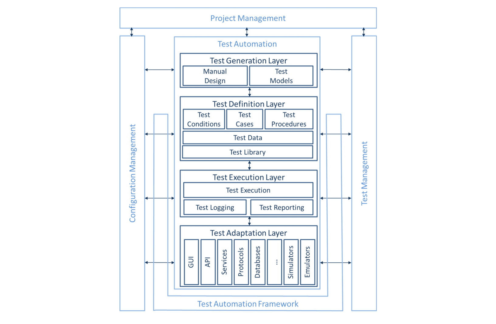
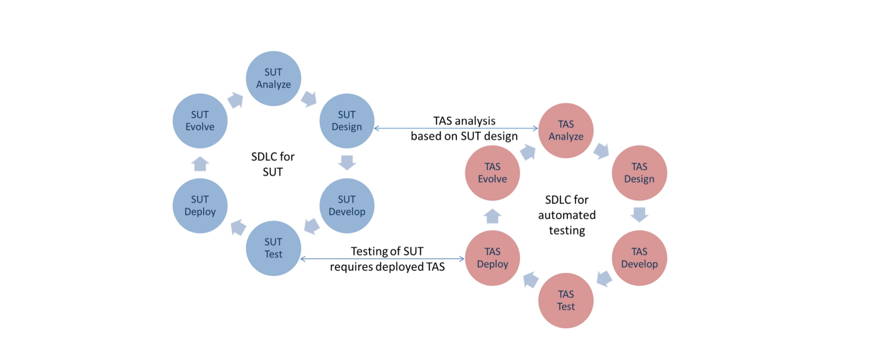
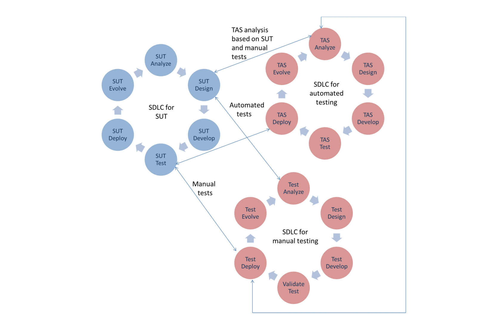

This syllabus contains the body of knowledge for ISTQB Test Automation Engineer (CT-TAE)
This document contains extracts from the original syllabus. Published here for study purposes. Non-relevant sections have been omitted. To read the full document visit the ISTQB® website.
The Test Automation Engineer certification is focused on the design, development, and maintenance of test automation solutions, and also covers the automation of dynamic functional tests.
Generic Test Automation Architecture (providing a blueprint for test automation solutions)
GUI
Graphical User Interface
SUT
system under test, see also test object
TAA
Test Automation Architecture (an instantiation of gTAA to define the architecture of a TAS)
TAE
Test Automation Engineer (the person who is responsible for the design of a TAA, including the implementation of the resulting TAS, its maintenance and technical evolution)
TAF
Test Automation Framework (the environment required for test automation including test harnesses and artifacts such as test libraries)
TAM
Test Automation Manager (the person responsible for the planning and supervision of the development and evolution of a TAS)
TAS
Test Automation Solution (the realization/implementation of a TAA, including test harnesses and artifacts such as test libraries)
ALTA-E-1.1.1 (K2) Explain the objectives, advantages, disadvantages and limitations of test automation
In software testing, test automation (which includes automated test execution) is one or more of thefollowing tasks:
Using purpose built software tools to control and set up test preconditions
Executing tests
Comparing actual outcomes to predicted outcomes
A good practice is to separate the software used for testing from the system under test (SUT) itself tominimize interference. There are exceptions, for example embedded systems where the test softwareneeds to be deployed to the SUT.
Test automation is expected to help run many test cases consistently and repeatedly on different versionsof the SUT and/or environments. But test automation is more than a mechanism for running a test suitewithout human interaction. It involves a process of designing the testware, including:
Software
Documentation
Test cases
Test environments
Test data
Testware is necessary for the testing activities that include:
Implementing automated test cases
Monitoring and controlling the execution of automated tests
Interpreting, reporting and logging the automated test results
Test automation has different approaches for interacting with a SUT:
Testing through the public interfaces to classes, modules or libraries of the SUT (API testing)
Testing through the user interface of the SUT (e.g., GUI testing or CLI testing)
Testing through a service or protocol
Objectives of test automation include:
Improving test efficiency
Providing wider function coverage
Reducing the total test cost
Performing tests that manual testers cannot
Shortening the test execution period
Increasing the test frequency/reducing the time required for test cycles
Advantages of test automation include:
More tests can be run per build
The possibility to create tests that cannot be done manually (real-time, remote, parallel tests)
Tests can be more complex
Tests run faster
Tests are less subject to operator error
More effective and efficient use of testing resources
Quicker feedback regarding software quality
Improved system reliability (e.g., repeatability, consistency)
Improved consistency of tests
Disadvantages of test automation include:
Additional costs are involved
Initial investment to setup TAS
Requires additional technologies
Team needs to have development and automation skills
On-going TAS maintenance requirement
Can distract from testing objectives, e.g., focusing on automating tests cases at the expense of executing tests
Tests can become more complex
Additional errors may be introduced by automation
Limitations of test automation include:
Not all manual tests can be automated
The automation can only check machine-interpretable results
The automation can only check actual results that can be verified by an automated test oracle
ALTA-E-1.2.1 (K2) Identify technical success factors of a test automation project
The following success factors apply to test automation projects that are in operation and therefore the focus is on influences that impact on the long term success of the project. Factors influencing the success of test automation projects at the pilot stage are not considered here.
Major success factors for test automation include the following:
Test Automation Architecture (TAA)
The Test Automation Architecture (TAA) is very closely aligned with the architecture of a software product. It should be clear which functional and non-functional requirements the architecture is to support. Typically this will be the most important requirements.
Often TAA is designed for maintainability, performance and learnability. (See ISO/IEC 25000:2014 for details of these and other non-functional characteristics.) It is helpful to involve software engineers who understand the architecture of the SUT.
SUT Testability
The SUT needs to be designed for testability that supports automated testing. In the case of GUI testing, this could mean that the SUT should decouple as much as possible the GUI interaction and data from the appearance of the graphical interface. In the case of API testing, this could mean that more classes, modules or the command-line interface need to be exposed as public so that they can be tested.
The testable parts of the SUT should be targeted first. Generally, a key factor in the success of test automation lies in the ease of implementing automated test scripts. With this goal in mind, and also to provide a successful proof of concept, the Test Automation Engineer (TAE) needs to identify modules or components of the SUT that are easily tested with automation and start from there.
Test Automation Strategy
A practical and consistent test automation strategy that addresses maintainability and consistency of the SUT.
It may not be possible to apply the test automation strategy in the same way to both old and new parts of the SUT. When creating the automation strategy, consider the costs, benefits and risks of applying it to different parts of the code
Consideration should be given to testing both the user interface and the API with automated test cases to check the consistency of the results.
Test Automation Framework (TAF)
A test automation framework (TAF) that is easy to use, well documented and maintainable, supports a consistent approach to automating tests.
In order to establish an easy to use and maintainable TAF, the following must be done:
Implement reporting facilities: The test reports should provide information (pass/fail/error/not run/aborted, statistical, etc.) about the quality of the SUT. Reporting should provide the information for the involved testers, test managers, developers, project managers and other stakeholders to obtain an overview of the quality.
Enable easy troubleshooting: In addition to the test execution and logging, the TAF has to provide an easy way to troubleshoot failing tests. The test can fail due to
failures found in the SUT
failures found in the TAS
problem with the tests themselves or the test environment.
Address the test environment appropriately: Test tools are dependent upon consistency in the test environment. Having a dedicated test environment is necessary in automated testing. If there is no control of the test environment and test data, the setup for tests may not meet the requirements for test execution and it is likely to produce false execution results.
Document the automated test cases: The goals for test automation have to be clear, e.g., which parts of application are to be tested, to what degree, and which attributes are to be tested (functional and non-functional). This must be clearly described and documented.
Trace the automated test: TAF shall support tracing for the test automation engineer to trace individual steps to test cases.
Enable easy maintenance: Ideally, the automated test cases should be easily maintained so that maintenance will not consume a significant part of the test automation effort. In addition, the maintenance effort needs to be in proportion to the scale of the changes made to the SUT. To do this, the cases must be easily analyzable, changeable and expandable. Furthermore, automated testware reuse should be high to minimize the number of items requiring changes.
Keep the automated tests up-to-date: when new or changed requirements cause tests or entire test suites to fail, do not disable the failed tests – fix them.
Plan for deployment: Make sure that test scripts can be easily deployed, changed and redeployed.
Retire tests as needed: Make sure that automated test scripts can be easily retired if they are no longer useful or necessary.
Monitor and restore the SUT: In real practice, to continuously run a test case or set of test cases, the SUT must be monitored continuously. If the SUT encounters a fatal error (such as a crash), the TAF must have the capability to recover, skip the current case, and resume testing with the next case.
The test automation code can be complex to maintain. It is not unusual to have as much code for testing as the code for the SUT. This is why it is of utmost importance that the test code be maintainable. This is due to the different test tools being used, the different types of verification that are used and the different testware artifacts that have to be maintained (such as test input data, test oracles, test reports).
With these maintenance considerations in mind, in addition to the important items that should be done, there are a few that should not be done, as follows:
Do not create code that is sensitive to the interface (i.e., it would be affected by changes in the graphical interface or in non-essential parts of the API).
Do not create test automation that is sensitive to data changes or has a high dependency on particular data values (e.g., test input depending on other test outputs).
Do not create an automation environment that is sensitive to the context (e.g., operating system date and time, operating system localization parameters or the contents of another application). In this case, it is better to use test stubs as necessary so the environment can be controlled.
The more success factors that are met, the more likely the test automation project will succeed. Not all factors are required, and in practice rarely are all factors met. Before starting the test automation project, it is important to analyze the chance of success for the project by considering the factors in place and the factors missing keeping risks of the chosen approach in mind as well as project context. Once the TAA is in place, it is important to investigate which items are missing or still need work.
ALTA-E-2.1.1 (K4) Analyze a system under test to determine the appropriate automation solution
When evaluating the context of the SUT and its environment, factors that influence test automation need to be identified to determine an appropriate solution. These may include the following:
SUT interfaces: The automated test cases invoke actions on the SUT. For this, the SUT must provide interfaces via which the SUT can be controlled. This can be done via UI controls, but also via lower-level software interfaces. In addition, some test cases may be able to interface at the communication level (e.g., using TCP/IP, USB, or proprietary messaging interfaces). The decomposition of the SUT allows the test automation to interface with the SUT on different test levels. It is possible to automate the tests on a specific level (e.g., component and system level), but only when the SUT supports this adequately. For example, at the component level, there may be no user interface that can be used for testing, so different, possibly customized, software interfaces (also called test hooks) need to be available.
Third party software: Often the SUT not only consists of software written in the home organization but may also include software provided by third parties. In some contexts, this third party software may need testing, and if test automation is justified, it may need a different test automation solution, such as using an API.
Levels of intrusion: Different test automation approaches (using different tools) have different levels of intrusion. The greater the number of changes that are required to be made to the SUT specifically for automated testing, the higher the level of intrusion. Using dedicated software interfaces requires a high level of intrusion whereas using existing UI elements has a lower level of intrusion. Using hardware elements of the SUT (such as keyboards, hand-switches, touchscreens, communication interfaces) have an even higher level of intrusion. The problem with higher levels of intrusion is the risk for false alarms. The TAS can exhibit failures that may be due to the level of intrusion imposed by the tests, but these are not likely to happen when the software system is being used in a real live environment. Testing with a high level of intrusion is usually a simpler solution for the test automation approach.
Different SUT: architectures Different SUT architectures may require different test automation solutions. A different approach is needed for an SUT written in C++ using COM technology than for an SUT written in Python. It may be possible for these different architectures to be handled by the same test automation strategy, but that requires a hybrid strategy with the ability to support them.
Size and complexity of the SUT: Consider the size and complexity of the current SUT and plans for future development. For a small and simple SUT, a complex and ultra-flexible test automation approach may not be warranted. A simple approach may be better suited. Conversely, it may not be wise to implement a small and simple approach for a very large and complex SUT. At times though, it is appropriate to start small and simple even for a complex SUT but this should be a temporary approach (see Chapter 3 for more details).
Several factors described here are known (e.g., size and complexity, available software interfaces) when the SUT is already available, but most of the time the development of the test automation should start before the SUT is available. When this happens several things need to be estimated or the TAE can specify the software interfaces that are needed. (see Section 2.3 for more details).
Even when the SUT does not yet exist, test automation planning can start. For example:
When the requirements (functional or non-functional) are known, candidates for automation can be selected from those requirements together with identifying the means to test them. Planning for automation can begin for those candidates, including identifying the requirements for the automation and determining the test automation strategy.
When the architecture and technical design is being developed, the design of software interfaces to support testing can be undertaken.
ALTA-E-2.2.1 (K4) Analyze test automation tools for a given project and report technical findings and recommendations
The primary responsibility for the tool selection and evaluation process belongs with the Test Automation Manager (TAM). However the TAE will be involved in supplying information to the TAM and conducting many of the evaluation and selection activities. The concept of the tool evaluation and selection process was introduced at the Foundation Level and more details of this process are described in the Advanced Level – Test Manager Syllabus [ISTQB-AL-TM].
The TAE will be involved throughout the tool evaluation and selection process but will have particular contributions to make to the following activities:
Assessing organizational maturity and identification of opportunities for test tool support
Assessing appropriate objectives for test tool support
Identifying and collecting information on potentially suitable tools
Analyzing tool information against objectives and project constraints
Estimating the cost-benefit ratio based on a solid business case
Making a recommendation on the appropriate tool
Identifying compatibility of the tool with SUT components
Functional test automation tools frequently cannot meet all the expectations or the situations that are encountered by an automation project. The following is a set of examples of these types of issues (but it is definitely not a complete list):
Finding
Examples
Possible Solutions
The tool’s interface does not work with other tools that are already in place
The test management tool has been updated and the connecting interface has changed
The information from pre-sales support was wrong and not all data can be transferred to the reporting too
Pay attention to the release notes before any updates, and for big migrations test before migrating to production
Try to gain an onsite demonstration of the tool that uses the real SUT
Seek support from the vendor and/or user community forums
Some SUT dependencies are changed to ones not supported by the test tool
The development department has updated to the newest version of Java
Synchronize upgrades for development/test environment and the test automation tool
Object on GUI could not be captured
The object is visible but the test automation tool cannot interact with it
Try to use only well-known technologies or objects in development
Do a pilot project before buying a test automation tool
Have developers define standards for objects
Tool looks very complicated
The tool has a huge feature set but only part of that will be used
Try to find a way to limit the feature set by removing unwanted features from the tool bar
Select a license to meet your needs.
Try to find alternative tools that are more focused on the required functionality.
Conflict with other systems
After installation of other software the test automation tool will not work anymore or vice versa
Read the release notes or technical requirements before installing.
Get confirmation from the supplier that there will be no impact to other tools.
Question user community forums
Impact on the SUT
During/after use of the test automation tool the SUT is reacting differently (e.g., longer response time)
Use a tool that will not need to change the SUT (e.g., installation of libraries, etc.)
Access to code
The test automation tool will change parts of the source code
Use a tool that will not need to change the source code (e.g., installation of libraries, etc.)
Limited resources (mainly in embedded environments)
The test environment has limited free resources or runs out of resources (e.g., memory)
Read release notes and discuss the environment with the tool provider to get confirmation that this will not lead to problems.
Question user community forums.
Updates
Update will not migrate all data or corrupts existing automated test scripts, data or configurations
Upgrade needs a different (better) environment
Test upgrade on the test environment and get confirmation from the provider that migration will work
Read update prerequisites and decide if the update is worth the effort
Seek support from the user community forums
Security
Test automation tool requires information that is not available to the test automation engineer
Test automation engineer needs to be granted access
Incompatibility between different environments and platforms
Test automation does not work on all environments/platforms
Implement automated tests to maximize tool independence thereby minimizing the cost of using multiple tools.
ALTA-E-2.3.1 (K2) Understand "design for testability" and "design for test automation" methods applicable to the SUT
SUT testability (availability of software interfaces that support testing e.g., to enable control and observability of the SUT) should be designed and implemented in parallel with the design and implementation of the other features of the SUT. This can be done by the software architect (as testability is just one of the non-functional requirements of the system), but often this is done by, or with the involvement of, a TAE.
Design for testability consists of several parts:
Observability: The SUT needs to provide interfaces that give insight into the system. Test cases can then use these interfaces to check, for example, whether the expected behavior equals the actual behavior.
Control(ability): The SUT needs to provide interfaces that can be used to perform actions on the SUT. This can be UI elements, function calls, communication elements (e.g., TCP/IP or USB protocol), electronic signals (for physical switches), etc.
Clearly defined architecture: The third important part of design for testability is an architecture that provides clear and understandable interfaces giving control and visibility on all test levels.
The TAE considers ways in which the SUT can be tested, including automated testing, in an effective (testing the right areas and finding critical bugs) and efficient (without taking too much effort) way. Whenever specific software interfaces are needed, they must be specified by the TAE and implemented by the developer. It is important to define testability and, if needed, additional software interfaces early in the project, so that development work can be planned and budgeted.
Some examples of software interfaces that support testing include:
The powerful scripting capabilities of modern spreadsheets.
Applying stubs or mocks to simulate software and/or hardware (e.g., electronic financial transactions, software service, dedicated server, electronic board, mechanical part) that is not yet available or is too expensive to buy, allows testing of the software in the absence of that specific interface.
Software interfaces (or stubs and drivers) can be used to test error conditions. Consider a device with an internal hard disk drive (HDD). The software controlling this HDD (called a driver) should be tested for failures or wear of the HDD. Doing this by waiting for a HDD to fail is not very efficient (or reliable). Implementing software interfaces that simulate defective or slow HDDs can verify that the driver software performs correctly (e.g., provides an error message, retries).
Alternative software interfaces can be used to test an SUT when no UI is available yet (and this is often considered to be a better approach anyway). Embedded software in technical systems often needs to monitor the temperature in the device and trigger a cooling function to start when the temperature rises above a certain level. This could be tested without the hardware using a software interface to specify the temperature.
State transition testing is used to evaluate the state behavior of the SUT. A way to check whether the SUT is in the correct state is by querying it via a customized software interface designed for this purpose (although this also includes a risk, see level of intrusion in Section 2.1).
Design for automation should consider that:
Compatibility with existing test tools should be established early on.
The issue of test tool compatibility is critical in that it may impact the ability to automate tests of important functionality (e.g., incompatibility with a grid control prevents all tests using that control).
Solutions may require development of program code and calls to APIs
Designing for testability is of the utmost importance for a good test automation approach, and can also benefit manual test execution.
A test automation engineer (TAE) has the role of designing, developing, implementing, and maintaining test automation solutions (TASs). As each solution is developed, similar tasks need to be done, similar questions need to be answered, and similar issues need to be addressed and prioritized. These reoccurring concepts, steps, and approaches in automating testing become the basis of the generic test automation architecture, called gTAA in short.
The gTAA presents the layers, components, and interfaces of a gTAA, which are then further redefined into the concrete TAA for a particular TAS. It allows for a structured and modular approach to building a test automation solution by:
Defining the concept space, layers, services, and interfaces of a TAS to enable the realization of TASs by in-house as well as by externally developed components
Supporting simplified components for the effective and efficient development of test automation
Re-using test automation components for different or evolving TASs for software product lines and families and across software technologies and tools
Easing the maintenance and evolution of TASs
Defining the essential features for a user of a TAS
A TAS consists of both the test environment (and its artifacts) and the test suites (a set of test cases including test data). A test automation framework (TAF) can be used to realize a TAS. It provides support for the realization of the test environment and provides tools, test harnesses, or supporting libraries.
It is recommended that the TAA of a TAS complies with the following principles that support easy development, evolution, and maintenance of the TAS:
Single responsibility: Every TAS component must have a single responsibility, and that responsibility must be encapsulated entirely in the component. In other words, every component of a TAS should be in charge of exactly one thing, e.g., generating keywords or data, creating test scenarios, executing test cases, logging results, generating execution reports.
Extension (see e.g., open/closed principle by B. Myer): Every TAS component must be open for extension, but closed for modification. This principle means that it should be possible to modify or enrich the behavior of the components without breaking the backward compatible functionality.
Replacement (see e.g., substitution principle by B. Liskov): Every TAS component must be replaceable without affecting the overall behavior of the TAS. The component can be replaced by one or more substituting components but the exhibited behavior must be the same.
Component segregation (see e.g., interfaces segregation principle by R.C. Martin): It is better to have more specific components than a general, multi-purpose component. This makes substitution and maintenance easier by eliminating unnecessary dependencies.
Dependency inversion: The components of a TAS must depend on abstractions rather than on lowlevel details. In other words, the components should not depend on specific automated test scenarios.
Typically, a TAS based on the gTAA will be implemented by a set of tools, their plugins, and/or components. It is important to note that the gTAA is vendor-neutral: it does not predefine any concrete method, technology, or tool for the realization of a TAS. The gTAA can be implemented by any software engineering approach, e.g., structured, object-oriented, service-oriented, model-driven, as well as by any software technologies and tools. In fact, a TAS is often implemented using off-the-shelf tools, but will typically need additional SUT specific additions and/or adaptations.
Other guidelines and reference models relating to TASs are software engineering standards for the selected SDLC (Software Development Lifecycle), programming technologies, formatting standards, etc. It is not in the scope of this syllabus to teach software engineering in general, however, a TAE is expected to have skills, experience, and expertise in software engineering.
Furthermore, a TAE needs to be aware of industry coding and documentation standards and best practices to make use of them while developing a TAS. These practices can increase maintainability, reliability, and security of the TAS. Such standards are typically domain-specific. Popular standards include:
ALTA-E-3.1.1 (K2) Explain the structure of the gTAA
The gTAA is structured into horizontal layers for the following:
Test generation
Test definition
Test execution
Test adaptation
The gTAA (see Figure 1: The Generic Test Automation Architecture) encompasses the following:
The Test Generation Layer that supports the manual or automated design of test cases. It provides the means for designing test cases.
The Test Definition Layer that supports the definition and implementation of test suites and/or test cases. It separates the test definition from the SUT and/or test system technologies and tools. It contains means to define high-level and low-level tests, which are handled in the test data, test cases, test procedures, and test library components or combinations thereof.
The Test Execution Layer that supports the execution of test cases and test logging. It provides a test execution tool to execute the selected tests automatically and a logging and reporting component.
The Test Adaptation Layer which provides the necessary code to adapt the automated tests for the various components or interfaces of the SUT. It provides different adaptors for connecting to the SUT via APIs, protocols, services, and others.
It also has interfaces for project management, configuration management and test management in relation to test automation. For example, the interface between test management and test adaptation layer copes with the selection and configuration of the appropriate adaptors in relation to the chosen test configuration.
The interfaces between the gTAA layers and their components are typically specific and, therefore, not further elaborated here.
It is important to understand that these layers can be present or absent in any given TAS. For example:
If the test execution is to be automated, the test execution and the test adaptation layers need to be utilized. They do not need to be separated and could be realized together, e.g., in unit test frameworks.
If the test definition is to be automated, the test definition layer is required.
If the test generation is to be automated, the test generation layer is required.
Most often, one would start with the implementation of a TAS from bottom to top, but other approaches such as the automated test generation for manual tests can be useful as well. In general it is advised to implement the TAS in incremental steps (e.g., in sprints) in order to use the TAS as soon as possible and to prove the added value of the TAS. Also, proofs of concept are recommended as part of test automation project.
Any test automation project needs to be understood, set up, and managed as a software development project and requires dedicated project management. The project management for the TAF development (i.e., test automation support for a whole company, product families or product lines) can be separated from the project management for the TAS (i.e., test automation for a concrete product).

Figure 1: The Generic Test Automation Architecture
Normally, a TAS is being developed in various iterations/versions and needs to be compatible with the iterations/versions of the SUT. The configuration management of a TAS may need to include:
Test models
Test definitions/specifications including test data, test cases and libraries
Test scripts
Test execution engines and supplementary tools and components
Test adaptors for the SUT
Simulators and emulators for the SUT environment
Test results and test reports
These items constitute the testware and must be at the correct version to match the version of the SUT. In some situations it might be necessary to revert to previous versions of the TAS, e.g., in case field issues need to be reproduced with older SUT versions. Good configuration management enables this capability.
As any test automation project is a software project, it requires the same project management as any other software project. A TAE needs to perform the tasks for all phases of the established SDLC methodology when developing the TAS. Also, a TAE needs to understand that the development environment of the TAS should be designed such that status information (metrics) can be extracted easily or automatically reported to the project management of the TAS.
A TAS must support the test management for the SUT. Test reports including test logs and test results need to be extracted easily or automatically provided to the test management (people or system) of the SUT.
ALTA-E-3.2.1 (K4) Design the appropriate TAA for a given project
There are a number of principal activities required to design a TAA, which can be ordered according to the needs of the test automation project or organization. These activities are discussed in the sections below. More or fewer activities may be required depending on the complexity of the TAA.
Capture requirements needed to define an appropriate TAA
The requirements for a test automation approach need to consider the following:
Which activity or phase of the test process should be automated, e.g., test management, test design, test generation, or test execution. Note that test automation refines the fundamental test process by inserting test generation between test design and test implementation.
Which test level should be supported, e.g., component level, integration level, system level
Which type of test should be supported, e.g., functional testing, conformance testing, interoperability testing
Which test role should be supported, e.g., test executor, test analyst, test architect, test manager
Which software product, software product line, software product family should be supported, e.g., to define the span and lifetime of the implemented TAS
Which SUT technologies should be supported, e.g., to define the TAS in view of compatibility to the SUT technologies
Compare and contrast different design/architecture approaches
The TAE needs to analyze the pros and cons of different approaches when designing selected layers of the TAA. These include but are not limited to:
Considerations for the test generation layer:
Selection of manual or automated test generation
Selection of for example requirements-based, data-based, scenario-based or behavior-based test generation
Selection of test generation strategies (e.g., model coverage such as classification trees for data-based approaches, use case/exception case coverage for scenario-based approaches, transition/state/path coverage for behavior-based approaches, etc.)
Choosing of the test selection strategy. In practice, full combinatorial test generation is infeasible as it may lead to test case explosion. Therefore, practical coverage criteria, weights, risk assessments, etc. should be used to guide the test generation and subsequent test selection.
Considerations for the test definition layer:
Selection of data-driven, keyword-driven, pattern-based or model-driven test definition
Selection of notation for test definition (e.g., tables, state-based notation, stochastic notation, dataflow notation, business process notation, scenario-based notation, etc. by use of spreadsheets, domain-specific test languages, the Testing and Test Control Notation (TTCN- 3), the UML Testing Profile (UTP), etc.)
Selection of style guides and guidelines for the definition of high quality tests
Selection of test case repositories (spreadsheets, databases, files, etc.)
Considerations for the test execution layer:
Selection of the test execution tool
Selection of interpretation (by use of a virtual machine) or compilation approach for implementing test procedures – this choice typically depends on the chosen test execution tool
Selection of the implementation technology for implementing test procedures (imperative, such as C; functional, such as Haskell or Erlang; object-oriented, such as C++, C#, Java; scripting, such as Python or Ruby, or a tool-specific technology) – this choice is typically dependent on the chosen test execution tool
Selection of helper libraries to ease test execution (e.g., test device libraries, encoding/decoding libraries, etc.)
Considerations for the test adaptation layer:
Selection of test interfaces to the SUT
Selection of tools to stimulate and observe the test interfaces
Selection of tools to monitor the SUT during test execution
Selection of tools to trace test execution (e.g., including the timing of the test execution)
Identify areas where abstraction can deliver benefits
Abstraction in a TAA enables technology independence in that the same test suite can be used in different test environments and on different target technologies. The portability of test artifacts is increased. In addition, vendor-neutrality is assured which avoids lock-in effects for a TAS. Abstraction also improves maintainability and adaptability to new or evolving SUT technologies. Furthermore, abstraction helps to make a TAA (and its instantiations by TASs) more accessible to non-technicians as test suites can be documented (including graphical means) and explained at a higher level, which improves readability and understandability.
The TAE needs to discuss with the stakeholders in software development, quality assurance, and testing which level of abstraction to use in which area of the TAS. For example, which interfaces of the test adaptation and/or test execution layer need to be externalized, formally defined, and kept stable throughout the TAA lifetime? It also needs to be discussed if an abstract test definition is being used or if the TAA uses a test execution layer with test scripts only. Likewise, it needs to be understood if test generation is abstracted by use of test models and model-based testing approaches. The TAE needs to be aware that there are trade-offs between sophisticated and straightforward implementations of a TAA with respect to overall functionality, maintainability, and expandability. A decision on which abstraction to use in a TAA needs to take into account these trade-offs.
The more abstraction is used for a TAA, the more flexible it is with respect to further evolution or transitioning to new approaches or technologies. This comes at the cost of larger initial investments (e.g., more complex test automation architecture and tools, higher skill set requirements, bigger learning curves), which delays the initial breakeven but can pay off in the long run. It may also lead to lower performance of the TAS.
While the detailed ROI (Return on Investment) considerations are the responsibility of the TAM, the TAE needs to provide inputs to the ROI analysis by providing technical evaluations and comparisons of different test automation architectures and approaches with respect to timing, costs, efforts, and benefits.
Understand SUT technologies and how these interconnect with the TAS
The access to the test interfaces of the SUT is central to any automated test execution. The access can be available at the following levels:
Software level, e.g., SUT and test software are linked together
API level, e.g., the TAS invokes the functions/operations/methods provided at a (remote) application programming interface
Protocol level, e.g., the TAS interacts with the SUT via HTTP, TCP, etc.
Service level, e.g., the TAS interacts with the SUT services via web services, RESTful services, etc.
In addition, the TAE needs to decide about the paradigm of interaction of the TAA to be used for the interaction between the TAS and SUT, whenever the TAS and SUT are separated by APIs, protocols or services. These paradigms include the following:
Event-driven paradigm, which drives the interaction via events being exchanged on an event bus
Client-server paradigm, which drives the interaction via service invocation from service requestors to service provider
Peer-to-peer paradigm, which drives the interaction via service invocation from either peer
Often the paradigm choice depends on the SUT architecture and may have implications on the SUT architecture. The interconnection between the SUT and the TAA needs to be carefully analyzed and designed in order to select a future-safe architecture between the two systems.
Understand the SUT environment
An SUT can be standalone software or software that works only in relation to other software (e.g., systems of systems), hardware (e.g., embedded systems), or environmental components (e.g., cyber-physical systems). A TAS simulates or emulates the SUT environment as part of an automated test setup.
Examples of test environments and sample uses include the following:
A computer with both the SUT and the TAS – useful for testing a software application
Individual networked computers for an SUT and TAS respectively – useful for testing server software
Additional test devices to stimulate and observe the technical interfaces of an SUT – useful for testing the software for example on a set-top box
Networked test devices to emulate the operational environment of the SUT – useful for testing the software of a network router
Simulators to simulate the physical environment of the SUT – useful for testing the software of an embedded control unit
Time and complexity for a given testware architecture implementation
While the effort estimation for a TAS project is the responsibility of a TAM, a TAE needs to support a TAM in this by providing good estimates for the time and complexity of a TAA design. Methods for estimations and examples include the following:
Analogy-based estimation such as such as functions points, three-point estimation, wideband delphi, and expert estimation
Estimation by use of work breakdown structures such as those found in management software or project templates
Parametric estimation such as Constructive Cost Model (COCOMO)
Size-based estimations such as Function Point Analysis, Story Point Analysis, or Use Case Analysis
Group estimations such as Planning Poker
Ease of use for a given testware architecture implementation
In addition to the functionality of the TAS, its compatibility with the SUT, its long-term stability and evolvability, its effort requirements, and ROI considerations, a TAE has the specific responsibility to address usability issues for a TAS. This includes, but is not limited to:
Tester-oriented design
Ease of use of the TAS
TAS support for other roles in the software development, quality assurance, and project management
Effective organization, navigation, and search in/with the TAS
Useful documentation, manuals, and help text for the TAS
Practical reporting by and about the TAS
Iterative designs to address TAS feedback and empirical insights
ALTA-E-3.2.2 (K2) Explain the role that layers play within a TAA
Test cases need to be translated into sequences of actions which are executed against an SUT. That sequence of actions can be documented in a test procedure and/or can be implemented in a test script. Besides actions, the automated test cases should also define test data for the interaction with the SUT and include verification steps to verify that the expected result was achieved by the SUT. A number of approaches can be used to create the sequence of actions:
The TAE implements test cases directly into automated test scripts. This option is the least recommended as it lacks abstraction and increases the maintenance load.
The TAE designs test procedures, and transforms them into automated test scripts. This option has abstraction but lacks automation to generate the test scripts.
The TAE uses a tool to translate test procedures into automated test scripts. This option combines both abstraction and automated script generation.
The TAE uses a tool that generates automated test procedures and/or translates the test scripts directly from models. This option has the highest degree of automation.
Note that the options are heavily dependent on the context of the project. It may also be efficient to start test automation by applying one of the less advanced options, as these are typically easier to implement. This can provide added value at short term although it will result in a less maintainable solution.
Well-established approaches for automating test cases include:
Capture/playback approach, which can be used for option 1
Structured scripting approach, data-driven approach, and keyword-driven approach, which can be used for option 2 or 3
Model-based testing (including the process-driven approach), which can be used for option 4
These approaches are explained subsequently in terms of principal concepts and pros and cons.
Capture/playback approach
Principal concept
In capture/playback approaches, tools are used to capture interactions with the SUT while performing the sequence of actions as defined by a test procedure. Inputs are captured; outputs may also be recorded for later checks. During the replay of events, there are various manual and automated output checking possibilities:
Manual: the tester has to watch the SUT outputs for anomalies
Complete: all system outputs that were recorded during capture must be reproduced by the SUT
Exact: all system outputs that were recorded during capture must be reproduced by the SUT to the level of detail of the recording
Checkpoints: only selected system outputs are checked at certain points for specified values
Pros
The capture/playback approach can be used for SUTs on the GUI and/or API level. Initially, it is easy to setup and use.
Cons
Capture/playback scripts are hard to maintain and evolve because the captured SUT execution depends strongly on the SUT version from which the capture has been taken. For example, when recording at the GUI level, changes in the GUI layout may impact the test script, even if it is only a change in the positioning of a GUI element. Therefore, capture/replay approaches remain vulnerable to changes.
Implementation of the test cases (scripts) can only start when the SUT is available.
Linear scripting
Principal concept
As with all scripting techniques, linear scripting starts with some manual test procedures. Note though that these may not be written documents – the knowledge about what tests to run and how to run them may be ‘known’ by one or more Test Analysts.
Each test is run manually while the test tool records the sequence of actions and in some cases captures the visible output from the SUT to the screen. This generally results in one (typically large) script for each test procedure. Recorded scripts may be edited to improve readability (e.g., by adding comments to explain what is happening at key points) or add further checks using the scripting language of the tool.
The scripts can then be replayed by the tool, causing the tool to repeat the same actions taken by the tester when the script was recorded. Although this can be used to automate GUI tests, it is not a good technique to use where large numbers of tests are to be automated and they are required for many releases of the software. This is because of the high maintenance cost that is typically caused by changes to the SUT (each change in the SUT may necessitate many changes to the recorded scripts).
Pros
The advantages of linear scripts focus on the fact that there is little or no preparation work required before you can start automating. Once you have learned to use the tool it is simply a matter of recording a manual test and replaying it (although the recording part of this may require additional interaction with the test tool to request that comparisons of actual with expected output occurs to verify the software is working correctly). Programming skills are not required but are usually helpful.
Cons
The disadvantages of linear scripts are numerous. The amount of effort required to automate any given test procedure will be mostly dependent on the size (number of steps or actions) required to perform it. Thus, the 1000th test procedure to be automated will take a similarly proportional amount of effort as the 100th test procedure. In other words, there is not much scope for decreasing the cost of building new automated tests.
Furthermore, if there were a second script that performed a similar test albeit with different input values, that script would contain the same sequence of instructions as the first script; only the information included with the instructions (known as the instruction arguments or parameters) would differ. If there were several tests (and hence scripts) these would all contain the same sequence of instructions, all of which would need to be maintained whenever the software changed in a way that affected the scripts.
Because the scripts are in a programming language, rather than a natural language, non- programmers may find them difficult to understand. Some test tools use proprietary languages (unique to the tool) so it takes time to learn the language and become proficient with it.
Recorded scripts contain only general statements in the comments, if any at all. Long scripts in particular are best annotated with comments to explain what is going on at each step of the test. This makes maintenance easier. Scripts can soon become very large (containing many instructions) when the test comprises many steps.
The scripts are non-modular and difficult to maintain. Linear scripting does not follow common software reusability and modularity paradigms and is tightly coupled with the tool being used.
Structured scripting
Principal concept
The major difference between the structured scripting technique and the linear scripting technique is the introduction of a script library. This contains reusable scripts that perform sequences of instructions that are commonly required across a number of tests. Good examples of such scripts are those that interface, e.g., to the operations of SUT interfaces.
Pros
Benefits of this approach include a significant reduction in the maintenance changes required and the reduced cost of automating new tests (because they can use scripts that already exist rather than having to create them all from scratch).
The advantages of structured scripting are largely attained through the reuse of scripts. More tests can be automated without having to create the volume of scripts that a linear scripting approach would require. This has a direct impact on the build and maintenance costs. The second and subsequent tests will not take as much effort to automate because some of the scripts created to implement the first test can be reused again.
Cons
The initial effort to create the shared scripts can be seen as a disadvantage but this initial investment should pay big dividends if approached properly. Programming skills will be required to create all the scripts as simple recording alone will not be sufficient. The script library must be well managed, i.e., the scripts should be documented and it should be easy for Technical Test Analysts to find the required scripts (so a sensible naming convention will help here).
Data-driven testing
Principal concept
The data-driven scripting technique builds on the structured scripting technique. The most significant difference is how the test inputs are handled. The inputs are extracted from the scripts and put into one or more separate files (typically called data files).
This means the main test script can be reused to implement a number of tests (rather than just a single test). Typically the ‘reusable’ main test script is called a ‘control’ script. The control script contains the sequence of instructions necessary to perform the tests but reads the input data from a data file. One control test may be used for many tests but it is usually insufficient to automate a wide range of tests. Thus, a number of control scripts will be required but that is only a fraction of the number of tests that are automated.
Pros
The cost of adding new automated tests can be significantly reduced by this scripting technique. This technique is used to automate many variations of a useful test, giving deeper testing in a specific area and may increase test coverage.
Having the tests ‘described’ by the data files means that Test Analysts can specify ‘automated’ tests simply by populating one or more data files. This gives Test Analysts more freedom to specify automated tests without as much dependency on the Technical Test Analysts (who may be a scarce resource).
Cons
The need to manage data files and make sure they are readable by TAS is a disadvantage but can be approached properly.
Also, important negative test cases may be missed. Negative tests are a combination of test procedures and test data. In an approach targeting test data mainly, "negative test procedures" may be missed.
Keyword-driven testing
Principal concept
The keyword-driven scripting technique builds on the data-driven scripting technique. There are two main differences: (1) the data files are now called ‘test definition’ files or something similar (e.g., action word files); and (2) there is only one control script.
A test definition file contains a description of the tests in a way that should be easier for Test Analysts to understand (easier than the equivalent data file). It will usually contain data as does the data files but keyword files also contain high level instructions (the keywords, or ‘action words’).
The keywords should be chosen to be meaningful to the Test Analyst, the tests being described and the application being tested. These are mostly (but not exclusively) used to represent high level business interactions with a system (e.g., “place order”). Each keyword represents a number of detailed interactions with the system under test. Sequences of keywords (including the relevant test data) are used to specify the test cases. Special keywords can be used for verification steps, or keywords can contain both the actions and the verification steps.
The scope of responsibility for Test Analysts includes creating and maintaining the keyword files. This means that once the supporting scripts are implemented, Test Analysts can add ‘automated’ tests simply by specifying them in a keyword file (as with data-driven scripting).
Pros
Once the controlling script and supporting scripts for the keywords have been written, the cost of adding new automated tests will be much reduced by this scripting technique.
Having the tests ‘described’ by the keyword files means that Test Analysts can specify ‘automated’ tests simply by describing the tests using the keywords and associated data. This gives Test Analysts more freedom to specify automated tests without as much dependency on the Technical Test Analysts (who may be a scarce resource). The benefit of the keyword-driven approach over the data-driven approach in this regard is the use of the keywords. Each keyword should represent a sequence of detailed actions that produce some meaningful result. For example, ‘create account’, ‘place order’, ‘check order status’ are all possible actions for an online shopping application that each involve a number of detailed steps. When one Test Analyst describes a system test to another Test Analyst, they are likely to speak in terms of these high level actions, not the detailed steps. The aim of the keyword-driven approach then is to implement these high level actions and allow tests to be defined in terms of the high level actions without reference to the detailed steps.
These test cases are easier to maintain, read and write as the complexity can be hidden in the keywords (or in the libraries, in case of a structured scripting approach). The keywords can offer an abstraction from the complexities of the interfaces of the SUT.
Cons
Implementing the keywords remains a big task for test automation engineers, particularly if using a tool that offers no support for this scripting technique. For small systems it may be too much overhead to implement and the costs would outweigh the benefits
Care needs to be taken to ensure that the correct keywords are implemented. Good keywords will be used often with many different tests whereas poor keywords are likely to be used just once or only a few times
Process-driven scripting
Principal concept
The process-driven approach builds on the keyword-driven scripting technique with the difference that scenarios – representing uses cases of the SUT and variants thereof – constitute the scripts which are parameterized with test data or combined into higher-level test definitions.
Such test definitions are easier to cope with as the logical relation between actions, e.g., ‘check order status’ after ‘place order’ in feature testing or ‘check order status’ without previous ‘place order’ in robustness testing, can be determined.
Pros
The use of process-like, scenario-based definition of test cases allows the test procedures to be defined from a workflow perspective. The aim of the process-driven approach is to implement these high-level workflows by using test libraries that represent the detailed test steps (see also keyword- driven approach).
Cons
Processes of an SUT may not be easy to comprehend by a Technical Test Analyst – and so is the implementation of the process-oriented scripts, particularly if no business process logic is supported by the tool.
Care needs also to be taken to ensure that the correct processes, by use of correct keywords, are implemented. Good processes will be referenced by other processes and result in many relevant tests whereas poor processes will not pay off in terms of relevance, error-detection capability, etc.
Model-based testing
Principal concept
Model-based testing refers to the automated generation of test cases (see also the Model-Based Tester Syllabus by ISTQB) – as opposed to the automated execution of test cases – by use of capture/playback, linear scripting, structured scripting, data-driven scripting or process-driven scripting. Model-based testing uses (semi-) formal models which abstract from the scripting technologies of the TAA. Different test generation methods can be used to derive tests for any of the scripting frameworks discussed before.
Pros
Model-based testing allows by abstraction to concentrate on the essence of testing (in terms of business logic, data, scenarios, configurations, etc. to be tested). It also allows generating tests for different target systems and targeted technologies, so that the models used for test generation constitute a future-safe representation of testware which can be reused and maintained as the technology evolves.
In case of changes in the requirements, the test model has to be adapted only; a complete set of test cases is generated automatically. Test case design techniques are incorporated in the test case generators.
Cons
Modeling expertise is required to run a model-based testing approach effectively. The task of modeling by abstracting an SUT’s interfaces, data and/or behavior can be difficult. In addition, modeling and model-based testing tools are not yet main stream, but are maturing. Model-based testing approaches require adjustments in the test processes. For example, the role of test designer needs to be established. In addition, the models used for test generation constitute major artifacts for quality assurance of an SUT and need to be quality assured and maintained as well.
ALTA-E-3.2.3 (K2) Understand design considerations for a TAA
In addition, technical aspects of an SUT should be considered when designing a TAA. Some of these are discussed below although this is not a complete list but should serve as a sample of the important aspects.
Interfaces of the SUT
An SUT has internal interfaces (inside the system) and external interfaces (to the system environment and its users or by exposed components). A TAA needs to be able to control and/or observe all those interfaces of the SUT which are potentially affected by the test procedures (i.e., interfaces need to be testable). In addition, there may also be the need to log the interactions between the SUT and the TAS with different levels of detail, typically including time stamps.
Test focus (e.g., a test) is needed at the beginning of the project (or continuously in agile environments) during architecture definition to verify the availability of the necessary test interfaces or test facilities required for the SUT to be testable (design for testability).
SUT data
An SUT uses configuration data to control its instantiation, configuration, administration, etc. Furthermore, it uses user data which it processes. An SUT also may use external data from other systems to complete its tasks. Depending on the test procedures for an SUT, all these types of data need to be definable, configurable and capable of instantiation by the TAA. The specific way of coping with the SUT data is decided in the TAA design. Depending on the approach, data may be handled as parameters, test data sheets, test databases, real data, etc.
SUT configurations
An SUT may be deployed in different configurations, for example on different operating systems, on different target devices, or with different language settings. Depending on the test procedures, different SUT configurations may have to be addressed by the TAA. The test procedures may require different test setups (in a lab) or virtual test setups (in the cloud) of the TAA in combination with a given SUT configuration. It may also require adding simulators and/or emulators of selected SUT components for selected SUT aspects.
SUT standards and legal settings
In addition to the technical aspects of an SUT, the TAA design may need to respect legal and/or standards requirements so as to design the TAA in a compatible manner. Examples include privacy requirements for the test data or confidentiality requirements that impact the logging and reporting capabilities of the TAA.
Tools and tool environments used to develop the SUT
Along with the development of an SUT, different tools may be used for the requirements engineering, design and modeling, coding, integration and deployment of the SUT. The TAA together with its own tools should take the SUT tool landscape into account in order to enable tool compatibility, traceability and/or reuse of artifacts.
Test interfaces in the software product
It is strongly recommended not to remove all the test interfaces prior to the product release. In most cases, these interfaces can be left in the SUT without causing issues with the final product. When left in place, the interfaces can be used by service and support engineers for problem diagnosis as well as for testing maintenance releases. It is important to verify that the interfaces will pose no security risks. If necessary, developers usually can disable these test interfaces such that they cannot be used outside the development department.
ALTA-E-3.2.4 (K4) Analyze factors of implementation, use, and maintenance requirements for a given TAS
The aspects of the development and quality assurance processes of an SUT should be considered when designing a TAA. Some of these are discussed below although this is not a complete list but should serve as a sample of the important aspects.
Test execution control requirements
Depending on the level of automation required by the TAA, interactive test execution, batch mode test execution or fully automated test execution may need to be supported by the TAA.
Reporting requirements
Depending on the reporting requirements including types of reports and their structures, the TAA needs to be able to support fixed, parameterized or defined test reports in different formats and layouts.
Role and access rights
Depending on the security requirements, the TAA may be required to provide a role and access rights system.
Established tool landscape
SUT project management, test management, code and test repository, defect tracking, incident management, risk analysis, etc., may all be supported by tools composing the established tool landscape. The TAA is also supported by a tool or tool set which needs to seamlessly integrate with the other tools in the landscape. Also, test scripts should be stored and versioned like SUT code so that revisions follow the same process for both.
ALTA-E-3.3.2 (K2) Explain the factors to be considered when identifying reusability of components
Development of a TAS is comparable to other software development projects. It can follow the same procedures and processes including peer reviews by developers and testers. Specific to a TAS are its compatibility and synchronization with the SUT. These require consideration in the TAA design (see Section 3.2) and in the TAS development. Also, the SUT is impacted by the test strategy, e.g., having to make test interfaces available to the TAS.
This section uses the software development lifecycle (SDLC) for explaining the TAS development process and the process-related aspects of compatibility and synchronization to the SUT. These aspects are likewise important for any other development process that has been chosen or is in place for the SUT and/or TAS development – they need to be adapted accordingly
The basic SDLC for TAS is shown in Figure 2.
Figure 2: Basic SDLC for TAS
The set of requirements for a TAS needs to be analyzed and collected (see Figure 2). The requirements guide the design of the TAS as defined by its TAA (see Section 3.2). The design is turned into software by software engineering approaches. Please note that a TAS may also use dedicated test device hardware, which is outside of consideration for this syllabus. Like any other software, a TAS needs to be tested. This is typically done by basic capability tests for the TAS which are followed by an interplay between the TAS and SUT. After deployment and use of a TAS, often a TAS evolution is needed to add more test capability, change tests or to update the TAS to match the changing SUT. The TAS evolution requires a new round of TAS development according to the SDLC.
Please also note that the SDLC does not show the backup, archiving and teardown of a TAS. As with the TAS development, these procedures should follow established methods in an organization.
ALTA-E-3.3.1 (K3) Apply components of the generic TAA (gTAA) to construct a purpose-built TAA
Testing of an SUT should be synchronized with its development – and, in the case of test automation, synchronized with the TAS development. Therefore, it is advantageous to coordinate the processes for SUT development, TAS development and for testing. A large gain can be achieved when the SUT and TAS development are compatible in terms of process structure, process management and tool support.
Team compatibility
Team compatibility is another aspect of compatibility between TAS and SUT development. If a compatible mindset is used to approach and manage the TAS and the SUT development, both teams will benefit by reviewing each other’s requirements, designs and/or development artifacts, by discussing issues, and by finding compatible solutions. Team compatibility also helps in the communication and interaction with each other.
Technology compatibility
Furthermore, technology compatibility between the TAS and SUT should be considered. It is beneficial to design and implement a seamless interplay between the TAS and the SUT right from the beginning. Even if that is not possible (e.g., because technical solutions are not available for either the TAS or SUT), a seamless interplay by use of adapters, wrappers or other forms of intermediaries may be possible.
Tool compatibility
Tool compatibility between TAS and SUT management, development, and quality assurance needs to be considered. For example, if the same tools for requirements management and/or issues management are used, the exchange of information and the coordination of TAS and SUT development will be easier.
After requirements elicitation, both SUT and TAS requirements are to be developed. TAS requirements can be grouped into two main groups of requirements: (1) requirements that address the development of the TAS as a software-based system, such as requirements for the TAS features for test design, test specification, test result analysis, etc. and (2) requirements that address the testing of the SUT by means of the TAS. These so called testing requirements correspond to the SUT requirements and reflect all those SUT features and properties which are to be tested by the TAS. Whenever the SUT or the TAS requirements are updated, it is important to verify the consistency between the two and to check that all SUT requirements that are to be tested by the TAS have defined test requirements.
Synchronization of development phases
In order to have the TAS ready when needed for testing the SUT, the development phases need to be coordinated. It is most efficient when the SUT and TAS requirements, designs, specifications, and implementations are synchronized.
Synchronization of defect tracking
Defects can relate to the SUT, to the TAS or to the requirements/designs/specifications. Because of the relationship between the two projects, whenever a defect is corrected within one, the corrective action may impact the other. Defect tracking and confirmation testing have to address both the TAS and the SUT.
Synchronization of SUT and TAS evolution
Both the SUT and the TAS can evolve to accommodate new features or disable features, to correct defects, or to address changes in their environment (including changes to the SUT and TAS respectively as one is an environment component for the other). Any change applied to an SUT or to a TAS may impact the other so the management of these changes should address both the SUT and TAS.
Two synchronization approaches between the SUT and TAS development processes are depicted in Figure 3 and Figure 4.
Figure 3 shows an approach where the two SDLC processes for the SUT and the TAS are mainly synchronized in two phases: (1) the TAS analysis is based on the SUT design, which itself is based on the SUT analysis and (2) the testing of the SUT makes use of the deployed TAS.

Figure 3: Synchronization example 1 of TAS and SUT development processes
Figure 4 shows a hybrid approach with both manual and automated testing. Whenever manual tests are used before the tests are automated or whenever manual and automated tests are used together, the TAS analysis should be based both on the SUT design and the manual tests. In this way, the TAS is synchronized with both. The second major synchronization point for such an approach is as before: the SUT testing requires deployed tests, which in the case of manual tests could just be the manual test procedures to be followed.

Figure 4: Synchronization example 2 of TAS and SUT development processes
Reuse of a TAS refers to the reuse of TAS artifacts (from any level of its architecture) across product lines, product frameworks, product domains and/or project families. Requirements for reuse result from the relevance of TAS artifacts for the other product variants, products and/or projects. Reusable TAS artifacts can include:
(Parts of) test models of test goals, test scenarios, test components or test data
(Parts of) test cases, test data, test procedures or test libraries themselves
The test engine and/or test report framework
The adaptors to the SUT components and/or interfaces
While reuse aspects are already settled when the TAA is defined, the TAS can help increase the ability for reuse by:
Following the TAA or revising and updating it whenever needed
Documenting the TAS artifacts so that they are easily understood and can be incorporated into new contexts
Ensuring the correctness of any TAS artifact so that the usage in new contexts is supported by its high quality
It is important to note that while design for reuse is mainly a matter for the TAA, the maintenance and improvements for reuse are a concern throughout the TAS lifecycle. It requires continuous consideration and effort to make reuse happen, to measure and demonstrate the added value of reuse, and to evangelize others to reuse existing TASs.
TAS support for a variety of target systems refers to the ability of a TAS to test different configurations of a software product. Different configurations refer to any of the following:
Number and interconnection of SUT components
Environments (both software and hardware) on which the SUT components run
Technologies, programming languages or operating systems used to implement the SUT components
Libraries and packages the SUT components are using
Tools used to implement the SUT components
While the first four aspects impact the TAS on any test level, the last one applies mainly to component-level and integration-level testing.
The ability of a TAS to test different software product configurations is determined when the TAA is defined. However, the TAS has to implement the ability to handle the technical variance and has to enable the management of the TAS features and components needed for different configurations of a software product.
The handling of the TAS variety in relation to the variety of the software product can be dealt with differently:
Version/configuration management for the TAS and SUT can be used to provide the respective versions and configurations of the TAS and SUT that fit to each other
TAS parameterization can be used to adjust a TAS to an SUT configuration
It is important to note that while design for TAS variability is mainly a matter for the TAA, the maintenance of and improvements for variability are a concern throughout the TAS life cycle. It requires continuous consideration and efforts to revise, add and even remove options and forms of variability.
There are two main activities involved in the implementation and rollout of a TAS: pilot and deployment. The steps that comprise these two activities will vary depending on the type of TAS and the specific situation.
For the pilot, at least the following steps should be considered:
Identify a suitable project
Plan the pilot
Conduct the pilot
Evaluate the pilot
For deployment, at least the following steps should be considered:
Identify initial target project(s)
Deploy the TAS in the selected projects
Monitor and evaluate the TAS in projects after a pre-defined period
ALTA-E-4.1.1 (K3) Apply guidelines that support effective test tool pilot and deployment activities
Tool implementation typically starts with a pilot project. The aim of the pilot project is to ensure that the TAS can be used to achieve the planned benefits. Objectives of the pilot project include:
Learn more detail about the TAS.
See how the TAS fits with existing processes, procedures and tools; identify how they might need to change. (It is usually preferred to modify the TAS so it fits the existing processes/procedures. If these need to be adjusted to “support the TAS”, this should at least be an improvement to the processes themselves).
Design the automation interface to match the needs of the testers.
Decide on standard ways of using, managing, storing and maintaining the TAS and the test assets including integration with configuration management and change management (e.g., deciding on naming conventions for files and tests, creating libraries and defining the modularity of test suites).
Identify metrics and measurement methods to monitor test automation in use, including usability, maintainability and expandability.
Assess whether the benefits can be achieved at reasonable cost. This will be an opportunity to reset expectations once the TASs have been used.
Determine what skills are required and which of those are available and which are missing.
Identify a suitable project
The pilot project should be selected carefully using the following guidelines:
Do not select a critical project. When the deployment of the TAS causes delay, this should not have major impact on critical projects. The deployment of the TAS will cost time at the beginning. The project team should be aware of this.
Do not select a trivial project. A trivial project is not a good candidate since success of the deployment does not imply success on non-trivial projects, and thus adds less to the information needed for the deployment.
Involve the necessary stakeholders (including management) in the selection process.
The SUT of the pilot project should be a good reference for the other projects of the organization, e.g., the SUT should contain representative GUI components that have to be automated.
Plan the pilot
The pilot should be treated as a regular development project: make a plan, reserve budget and resources, report on the progress, define milestones, etc. An extra attention point is to make sure that the people working on the TAS deployment (i.e., a champion) can spend enough effort on the deployment even when other projects demand the resources for their activities. It is important to have management commitment, particularly on any shared resources. These people will likely not be able to work full-time on the deployment.
When the TAS has not been provided by a vendor, but is developed in-house, the corresponding developers will need to be involved in the deployment activities.
Conduct the pilot
Perform the pilot of the deployment and pay attention to the following points:
Does the TAS provide the functionality as expected (and promised by the vendor)? If not, this needs to be addressed as soon as possible. When the TAS is developed in-house the corresponding developers need to assist the deployment by providing any missing functionality.
Do the TAS and the existing process support each other? If not they need to be aligned.
Once the pilot has been assessed, the TAS should only be deployed to the rest of the department/organization if the pilot has been deemed successful. Rollout should be undertaken incrementally and be well-managed. Success factors for deployment include:
An incremental rollout: Perform the rollout to the rest of the organization in steps, in increments. In this way, the support to the new users comes in "waves" rather than all at once. This allows the usage of the TAS to increase in steps. Possible bottlenecks can be identified and solved before they become real problems. Licenses can be added when necessary.
Adapting and improving processes to fit with the use of the TAS: When different users use the TAS, different processes come in touch with the TAS, and need to be tuned to the TAS, or the TAS may need (small) adaptions to the processes.
Providing training and coaching/mentoring for new users: New users need training and coaching in the use of the new TAS. Make sure this is in place. Training/workshops should be provided to the users before they actually use the TAS.
Defining usage guidelines: It is possible to write guidelines, checklists and FAQs for the usage of the TAS. This can prevent extensive support questions.
Implementing a way to gather information about the actual use: There should be an automated way to gather information about the actual usage of the TAS. Ideally not only the usage itself, but also what parts of the TAS (certain functionalities) are being used. In this way, the usage of the TAS can be monitored easily.
Monitoring TAS use, benefits and costs: Monitoring the usage of the TAS over a certain period of time indicates whether the TAS is indeed used. This information can also be used to re-calculate the business case (e.g., how much time has been saved, how many problems prevented).
Providing support for the test and development teams for a given TAS.
Gathering lessons learned from all teams: Perform evaluation/retrospective meetings with the different teams that use the TAS. In this way, lessons learned can be identified. The teams will feel that their input is necessary and wanted to improve the usage of the TAS.
Identifying and implementing improvements: Based on the feedback of the team and the monitoring of the TAS, identify and implement steps for improvement. Also communicate this clearly to the stakeholders
The deployment of a TAS depends greatly on the phase of development of the software project which will be tested by the TAS.
Usually, a new TAS or a new version of it, is deployed either in the beginning of the project or when reaching a milestone, such as code freeze or the end of a sprint. This is because the deployment activities, with all the testing and modifications involved, require time and effort. Also this is a good way to mitigate the risk of the TAS not working and causing disruptions in the test automation process. However, if there are critical issues that need to be fixed for the TAS or if a component of the environment in which it runs needs to be replaced, then the deployment will be done independently from the development phase of the SUT.
ALTA-E-4.2.1 (K4) Analyze deployment risks and identify technical issues that could lead to failure of the test automation project, and plan mitigation strategies
Technical issues can lead to product- or project risks. Typical technical issues include:
Too much abstraction can lead to difficulty in understanding what really happens (e.g., with keywords)
Data-driven: data tables can become too large/complex/cumbersome
Dependency of the TAS to use certain operating system libraries or other components that may not be available in all the target environments of the SUT
Typical deployment project risks include:
Staffing issues: getting the right people to maintain the code base may be difficult
New SUT deliverables may cause the TAS to operate incorrectly
Delays in introducing automation
Delays in updating TAS based on the changes done to the SUT
The TAS cannot capture the (non-standard) objects it is intended to track
Potential failure points of the TAS project include:
Migration to a different environment
Deployment to the target environment
New delivery from development
There are a number of risk mitigation strategies that can be employed to deal with these risk areas. These are discussed below.
The TAS has a software lifecycle of its own, whether it is in-house developed or an acquired solution. One thing to remember is that the TAS, like any other software, needs to be under version control and its features documented. Otherwise, it becomes very difficult to deploy different parts of it and make them work together, or work in certain environments.
Also, there has to be a documented, clear, and easy to follow deployment procedure. This procedure is version dependent; therefore, it has to be included under version control as well.
There are two distinct cases when deploying a TAS:
Initial deployment
Maintenance deployment - TAS already exists and needs to be maintained
Before starting with the first deployment of a TAS, it is important to be sure it can run in its own environment, it is isolated from random changes, and test cases can be updated and managed. Both the TAS and its infrastructure must be maintained.
In the case of first time deployment, the following basic steps are needed:
Define the infrastructure in which the TAS will run
Create the infrastructure for the TAS
Create a procedure for maintaining the TAS and its infrastructure
Create a procedure for maintaining the test suite that the TAS will execute
The risks related to first time deployment include:
Total execution time of the test suite may be longer than the planned execution time for the test cycle. In this case it is important to make sure that the test suite gets enough time to be executed entirely before the next scheduled test cycle begins.
Installation and configuration issues with test environment exist (e.g., database setup and initial load, services start/stop). In general, the TAS needs an effective way to setup needed preconditions for the automated test cases within the test environment
For maintenance deployments, there are additional considerations. The TAS in itself needs to evolve, and the updates for it have to be deployed into production. Before deploying an updated version of the TAS into production, it needs to be tested like any other software. It is therefore necessary to check the new functionality, to verify that the test suite can be run on the updated TAS, that reports can be sent, and that there are no performance issues or other functional regressions. In some cases the entire test suite may need to be changed to fit the new version of the TAS.
When maintenance deployment occurs, the following steps are needed:
Make an assessment of the changes in the new version of the TAS compared to the old one
Test the TAS for both new functionality and regressions
Check if the test suite needs to be adapted to the new version of the TAS
An update also incurs the following risks and corresponding mitigation actions:
The test suite needs to change to run on the updated TAS: make the necessary changes to the test suite and test them before deploying them on to the TAS.
Stubs, drivers and interfaces used in testing need to change to fit with the updated TAS: make the necessary changes to the test harness and test it before deploying to the TAS.
The infrastructure needs to change to accommodate the updated TAS: make an assessment of the infrastructure components that need to be changed, perform the changes and test them with the updated TAS.
The updated TAS has additional defects or performance issues: perform an analysis of risks vs. benefits. If the issues discovered make it impossible to update the TAS, it may be best not to proceed with the update or to wait for a next version of the TAS. If the issues are negligible compared to the benefits, the TAS can still be updated. Be sure to create a release note with known issues to notify the test automation engineers and other stakeholders and try to get an estimate on when the issues are going to be fixed.
Developing test automation solutions is not trivial. They need to be modular, scalable, understandable, reliable, and testable. To add even more complexity, test automation solutions – like any other software system, have to evolve. Whether due to internal changes or changes in the environment in which they operate, maintenance is an important aspect of architecting a TAS. Maintaining the TAS by adapting it to new types of systems to be tested, by accommodating support for new software environments, or by making it compliant to new laws and regulations, helps to ensure reliable and safe operation of the TAS. It also optimizes the life span and the performance of the TAS.
ALTA-E-4.3.1 (K2) Understand which factors support and affect TAS maintainability
Maintenance is done on an existing operational TAS and is triggered by modifications, migration, or retirement of the system. This process can be structured in the following categories:
Preventive maintenance - Changes are made to make the TAS support more test types, test on multiple interfaces, test multiple versions of the SUT or support test automation for a new SUT.
Corrective maintenance - Changes are made to correct failures of the TAS. The best way to maintain a TAS in operation, thus reducing the risk in using it, is through the execution of regular maintenance tests.
Perfective maintenance - The TAS is optimized and non-functional issues are fixed. They can address the performance of the TAS, its usability, robustness or reliability.
Adaptive maintenance - As new software systems are launched in the market (operating systems, database managers, web browsers, etc.), it may be required that the TAS supports them. Also, it may be the case that the TAS needs to comply with new laws, regulations or industry-specific requirements. In this case, changes are made to the TAS to make it adapt accordingly. Note: usually, conformance to laws and regulations creates mandatory maintenance with specific rules, requirements and sometimes auditing requirements. Also, as integrating tools are updated and new versions created, tool integration endpoints need to be maintained and kept functional.
Maintenance is a process that can affect all layers and components of a TAS. The scope of it depends on:
The size and complexity of the TAS
The size of the change
The risk of the change
Given the fact that maintenance refers to TAS in operation, an impact analysis is necessary to determine how the system may be affected by the changes. Depending on the impact, the changes need to be introduced incrementally and tests need to be carried out after each step to ensure the continuous functioning of the TAS. Note: maintaining the TAS can be difficult if its specifications and documentation are outdated.
Because time efficiency is the main contributing factor to the success of test automation, it becomes critical to have good practices for maintaining the TAS including:
The deployment procedures and usage of the TAS must be clear and documented
The third party dependencies must be documented, together with drawbacks and known issues
The TAS must be modular, so parts of it can be easily replaced
The TAS must run in an environment that is replaceable or with replaceable components
The TAS must separate test scripts from the TAF itself
The TAS must run isolated from the development environment, so that changes to the TAS will not adversely affect the test environment
The TAS together with the environment, test suite and testware artifacts must be under configuration management
There are also considerations for the maintenance of the third party components and other libraries as follows:
Very often it is the case that the TAS will use third party components to run the tests. It may also be the case that the TAS depends on third party libraries (e.g., the UI automation libraries). All the third party component parts of the TAS must be documented and under configuration management.
It is necessary to have a plan in case these external components need to be modified or fixed. The person responsible for the TAS maintenance needs to know who to contact or where to submit an issue.
There must be documentation regarding the license under which the third party components are used, so that there is information on whether they can be modified, to what degree and by whom.
For each of the third party components, it is necessary to get information about updates and new versions. Keeping the third party components and libraries up to date is a preventive action that pays off the investment in the long-term.
Considerations for naming standards and other conventions include:
The idea of naming standards and other conventions has a simple reason: the test suite and the TAS itself has to be easy to read, understand, change and maintain. This saves time in the maintenance process and also minimizes the risk of introducing regressions or wrong fixes that could otherwise be easily avoided.
It is easier to introduce new people to the test automation project when standard naming conventions are used.
The naming standards can refer to variables and files, test scenarios, keywords and keyword parameters. Other conventions refer to pre-requisites and post-actions for test execution, the content of the test data, the test environment, status of test execution, and execution logs and reports.
All the standards and conventions must be agreed upon and documented when starting a test automation project.
Documentation considerations include:
The need for good and current documentation for both the test scenarios and the TAS is quite clear, but there are two issues related to this: someone has to write it and someone has to maintain it.
While the code of the test tool can be either self-documenting or semi-automatically documented, all the design, components, integrations with third parties, dependencies and deployment procedures need to be documented by someone.
It is a good practice to introduce the writing of documentation as part of the development process. A task should not be considered as done unless it is documented or the documentation is updated.
Training material considerations include:
If the documentation for the TAS is well-written, it can be used as a basis for the training material of the TAS.
The training material is a combination of functional specifications of the TAS, design and architecture of the TAS, deployment and maintenance of the TAS, usage of the TAS (user manual), practical examples and exercises, and tips and tricks.
The maintenance of the training material consists of initially writing it and then reviewing it periodically. It is done in practice by the team members designated as trainers on the TAS and it most likely happens towards the end of a lifecycle iteration of the SUT (at the end of sprints, for instance).
ALTA-E-5.1.1 (K2) Classify metrics that can be used to monitor the test automation strategy and effectiveness
This section focuses on the metrics that can be used to monitor the test automation strategy and the effectiveness and efficiency of the TAS. These are separate from the SUT related metrics used to monitor the SUT and the (functional and non-functional) testing of the SUT. Those are selected by the project’s overall Test Manager. Test automation metrics allow the TAM and TAE to track progress toward the goals for test automation and to monitor the impact of changes made to the test automation solution.
The TAS metrics can be divided into two groups: external and internal. The external metrics are those used to measure the TAS’s impact on other activities (in particular the testing activities). The internal metrics are those used to measure the effectiveness and efficiency of the TAS in fulfilling its objectives.
The measured TAS metrics typically include the following:
External TAS metrics
Automation benefits
Effort to build automated tests
Effort to analyze automated test incidents
Effort to maintain automated tests
Ratio of failures to defects
Time to execute automated tests
Number of automated test cases
Number of pass and fail results
Number of false-fail and false-pass results
Code coverage
Internal TAS metrics
Tool scripting metrics
Automation code defect density
Speed and efficiency of TAS components
These are each described below.
Automation benefits
It is particularly important to measure and report the benefits of a TAS. This is because the costs (in terms of the number of people involved over a given period of time) are easy to see. People working outside testing will be able to form an impression of the overall cost but may not see the benefits achieved.
Any measure of benefit will depend on the objective of the TAS. Typically this may be a savings of time or effort, an increase in the amount of testing performed (breadth or depth of coverage, or frequency of execution), or some other advantage such as increased repeatability, greater use of resources, or fewer manual errors. Possible measures include:
Number of hours of manual test effort saved
Reduction in time to perform regression testing
Number of additional cycles of test execution achieved
Number or percentage of additional tests executed
Percentage of automated test cases related to the entire set of test cases (although automated cannot easily be compared to manual test cases)
Increase in coverage (requirements, functionality, structural)
Number of defects found earlier because of the TAS (when the average benefit of defects found earlier is known, this can be "calculated" to a sum of prevented costs)
Number of defects found because of the TAS which would not have been found by manual testing (e.g., reliability defects)
Note that test automation generally saves manual test effort. This effort can be devoted to other kinds of (manual) testing (e.g., exploratory testing). Defects found by these additional tests can also be seen as indirect benefits of the TAS, as the test automation enabled these manual tests to be executed. Without the TAS these tests would not have been executed and subsequently the additional defects would not have been found.
Effort to build automated tests
The effort to automate tests is one of the key costs associated with test automation. This is often more than the cost of running the same test manually and therefore can be a detriment to expanding the use of test automation. While the cost to implement a specific automated test will depend largely on the test itself, other factors such as the scripting approach used, familiarity with the test tool, the environment, and the skill level of the test automation engineer will also have an impact.
Because larger or more complex tests typically take longer to automate than short or simple tests, computing the build cost for test automation may be based on an average build time. This may be further refined by considering the average cost for a specific set of tests such as those targeting the same function or those at a given test level. Another approach is to express the build cost as a factor of the effort required to run the test manually (equivalent manual test effort, EMTE). For example, it may be that it takes twice the manual test effort to automate a test case, or two times the EMTE.
Effort to analyze SUT failures
Analyzing failures in SUT discovered through automated test execution can be significantly more complex than for a manually executed test because the events leading up to the failure of a manual test are often known by the tester running the test. This can be mitigated as described in design level in Chapter 3.1.4 and in reporting level in Chapters 5.3 & 5.4. This measure can be expressed as an average per failed test case or it may be expressed as a factor of EMTE. The latter being particularly suitable where the automated tests vary significantly in complexity and execution length.
The available logging of the SUT and the TAS play a crucial role in analyzing failures. The logging should provide enough information to perform this analysis efficiently. Important logging features include:
SUT logging and TAS logging should be synchronized
The TAS should log the expected and actual behavior
The TAS should log the actions to be performed
The SUT, on the other hand, should log all actions that are performed (regardless of whether the action is the result of manual or automated testing). Any internal errors should be logged and any crash dumps and stack traces should be available.
Effort to maintain automated tests
The maintenance effort required to keep automated tests in sync with the SUT can be very significant and ultimately may outweigh the benefits achieved by the TAS. This has been the cause of failure for many automation efforts. Monitoring the maintenance effort is therefore important to highlight when steps need to be taken to reduce the maintenance effort or at least prevent it from growing unchecked.
Measures of maintenance effort can be expressed as a total for all the automated tests requiring maintenance for each new release of the SUT. They may also be expressed as an average per updated automated test or as a factor of EMTE.
A related metric is the number or percentage of tests requiring maintenance work.
When maintenance effort for automated tests is known (or can be derived), this information can play a crucial role in deciding whether or not to implement certain functionality or to fix a certain defect. The effort required to maintain the test case due to the changed software should be considered with the change of the SUT.
Ratio of failures to defects
A common problem with automated tests is that many of them can fail for the same reason – a single defect in the software. While the purpose of tests is to highlight defects in the software, having more than one test highlight the same defect is wasteful. This is particularly the case for automated testing as the effort required to analyze each failed test can be significant. Measuring the number of automated tests that fail for a given defect can help indicate where this may be a problem. The solution lies in the design of the automated tests and their selection for execution
Time to execute automated tests
One of the easier metrics to determine is the time it takes to execute the automated tests. In the beginning of the TAS this might not be important, but as the number of automated test cases increases, this metric may become quite important.
Number of automated test cases
This metric can be used to show the progression made by the test automation project. But one has to take into account that just the number of automated test cases does not reveal a lot of information; for example, it does not indicate that the test coverage has increased.
Number of pass and fail results
This is a common metric and tracks how many automated tests passed and how many failed to achieve the expected result. Failures have to be analyzed to determine if the failure was due to a defect in the SUT or was due to external issues such as a problem with the environment or with the TAS itself.
Number of false-fail and false-pass results
As was seen in several previous metrics, it can take quite some time to analyze test failures. This is even more frustrating when it turns out to be a false alarm. This happens when the problem is in the TAS or test case but not in the SUT. It is important that the number of false alarms (and the potentially wasted effort) are kept low. False-fails can reduce confidence in the TAS. Conversely, false-pass results may be more dangerous. When a false-pass occurs, there was a failure in the SUT, but it was not identified by the test automation so a pass result was reported. In this case, a potential defect may escape detection. This can occur because the verification of the outcome was not done properly, an invalid test oracle was used or the test case was expecting the wrong result.
Note that false alarms can be caused by defects in the test code (see metric "Automation code defect density") but may also be caused by an unstable SUT that is behaving in an unpredictable manner (e.g., timing out). Test hooks can also cause false alarms due to the level of intrusion they are causing.
Code coverage
Knowing the SUT code coverage provided by the different test cases can reveal useful information. This can also be measured at a high level, e.g., the code coverage of the regression test suite. There is no absolute percentage that indicates adequate coverage, and 100% code coverage is unattainable in anything other than the simplest of software applications. However, it is generally agreed that more coverage is better as it reduces overall risk of software deployment. This metric can indicate activity in the SUT as well. For example, if the code coverage drops, this most likely means that functionality has been added to the SUT, but no corresponding test case has been added to the automated test suite.
Tool scripting metrics
There are many metrics that can be used to monitor automation script development. Most of these are similar to source code metrics for the SUT. Lines of code (LOC) and cyclomatic complexity can be used to highlight overly large or complex scripts (suggesting possible redesign is needed).
The ratio of comments to executable statements can be used to give a possible indication of the extent of script documentation and annotation. The number of non-conformances to scripting standards can give an indication of the extent to which those standards are being followed.
Automation code defect density
Automation code is no different than the code of the SUT in that it is software and will contain defects. Automation code should not be considered less important than the SUT code. Good coding practices and standards should be applied and the result of these monitored by metrics such as code defect density. These will be easier to collect with the support of a configuration management system.
Speed and efficiency of TAS components
Differences in the time it takes to perform the same test steps in the same environment can indicate a problem in the SUT. If the SUT is not performing the same functionality in the same elapsed time, investigation is needed. This may indicate a variability in the system that is not acceptable and one that could worsen with increased load The TAS needs to be performing well enough for it not to hinder the performance of SUT. If the performance is critical requirement for the SUT then the TAS needs to be designed in a way that takes this into account.
Trend metrics
With many of these metrics it is the trends (i.e., the way in which the measures change over time) that may be more valuable to report than the value of a measure at a specific time. For example, knowing that the average maintenance cost per automated test requiring maintenance is more than it was for the previous two releases of the SUT may prompt action to determine the cause of the increase and undertake steps to reverse the trend.
The cost of measuring should be as low as possible and this can often be achieved by automating the collection and reporting.
ALTA-E-5.2.1 (K3) Implement metrics collection methods to support technical and management requirements. Explain how measurement of the test automation can be implemented.
Since a test automation strategy has automated testware at its core, the automated testware can be enhanced to record information about its use. Where abstraction is combined with structured testware, any enhancements made to the underlying testware can be utilized by all of the higher level automated test scripts. For example, enhancing the underlying testware to record the start and end time of execution for a test may well apply to all tests.
Features of automation that support measurement and report generation
The scripting languages of many test tools support measurement and reporting through facilities that can be used to record and log information before, during, and after test execution of individual tests, sets of tests and an entire test suite.
The reporting on each of a series of test runs needs to have in place an analysis feature to take into account the results of the previous test runs so it can highlight trends (such as changes in the test success rate).
Automating testing typically requires automation of both the test execution and the test verification, the latter being achieved by comparing specific elements of the test outcome with a pre-defined expected outcome. This comparison is generally best undertaken by a test tool. The level of information that is reported as a result of this comparison must be considered. It is important that the status of the test be determined correctly (e.g., pass, fail). In the case of a failed status, more information about the cause of the failure will be required (e.g., screen shots).
Distinguishing between expected differences in the actual and expected outcome of a test is not always trivial though tool support can help greatly in defining comparisons that ignore the expected differences (such as dates and times) while highlighting any unexpected differences.
Integration with other third party tools (spreadsheets, XML, documents, databases, report tools, etc.)
When information from the execution of automated test cases is used in other tools (for tracking and reporting, e.g., updating traceability matrix), it is possible to provide the information in a format that is suitable for these third party tools. This is often achieved through existing test tool functionality (export formats for reporting) or by creating customized reporting that is output in a format consistent with other programs (“.xls” for Excel, “.doc” for Word, “.html” for Web, etc.).
Visualization of results (dashboards, charts, graphs, etc.)
Test results should be made visible in charts. Consider using colors to indicate problems in the test execution such as traffic lights to indicate the progress of the test execution / automation so that decisions can be made based on reported information. Management is particularly interested in visual summaries to see the test result in one glance; in case more information is needed, they can still dive in to the details.
ALTA-E-5.3.1 (K4) Analyze test logging of both TAS and SUT data
Logging is very important in the TAS, including logging for both the test automation itself and the SUT. Test logs are a source that frequently are used to analyze potential problems. In the following section are examples of test logging, categorized by TAS or SUT.
TAS logging (whether the TAF or the test case itself logs the information is not so important and depends on the context) should include the following:
Which test case is currently under execution, including start and end time.
The status of the test case execution because, while failures can easily be identified in log files, the framework itself should also have this information and should report via a dashboard. The execution status of the test case can be pass, fail or TAS error. The result of TAS error is used for situations where the problem is not in the SUT.
Details of the test log at a high level (logging significant steps) including timing information.
Dynamic information about the SUT (e.g., memory leaks) that the test case was able to identify with the help of third party tools. Actual results and failures of these dynamic measurements should be logged with the test case that was executing when the incident was detected.
In the case of reliability testing / stress testing (where numerous cycles are performed) a counter should be logged, so it can be easily determined how many times test cases have been executed.
When test cases have random parts (e.g., random parameters, or random steps in state-machine testing), the random number/choices should be logged.
All actions a test case performs should be logged in such a way that the log file (or parts of it) can be played back to re-execute the test with exactly the same steps and the same timing. This is useful to check for the reproducibility of an identified failure and to capture additional information. The test case action information could also be logged on the SUT itself for use when reproducing customer-identified issues (the customer runs the scenario, the log information is captured and can then be replayed by the development team when troubleshooting the issue).
Screenshots and other visual captures can be saved during test execution for further use during failure analysis
Whenever a test case encounters a failure, the TAS should make sure that all information needed to analyze the problem is available/stored, as well as any information regarding the continuation of testing, if applicable. Any associated crash dumps and stack traces should be saved by the TAS to a safe location. Also any log files which could be overwritten (cyclic buffers are often used for log files on the SUT) should be copied to this location where they will be available for later analysis.
Use of color can help to distinguish different types of logged information (e.g., errors in red, progress information in green).
SUT logging:
When the SUT identifies a problem, all necessary information needed to analyze the issue should be logged, including date and time stamps, source location of issue, error messages, etc.
The SUT can log all user interaction (directly via the available user interface, but also via network interfaces, etc.). In this way issues identified by customers can be analyzed properly, and development can try to reproduce the problem.
At startup of the system, configuration information should be logged to a file, consisting of the different software/firmware versions, configuration of the SUT, configuration of the operating system, etc.
All the different logging information should be easily searchable. A problem identified in the log file by the TAS should be easily identified in the log file of the SUT, and vice versa (with or without additional tooling). Synchronizing various logs with a time stamp facilitates correlation of what occurred when an error was reported.
ALTA-E-5.4.1 (K2) Explain how a test execution report is constructed and published
The test logs give detailed information about the execution steps, actions and responses of a test case and/or test suite. However, the logs alone cannot provide a good overview of the overall execution result. For this, it is necessary to have in place reporting functionality. After each execution of the test suite, a concise report must be created and published. A reusable report generator component could be used for this.
Content of the reports
The test execution report must contain a summary giving an overview of the execution results, the system being tested and the environment in which the tests were run which is appropriate for each of the stakeholders.
It is necessary to know which tests have failed and the reasons for failure. To make troubleshooting easier, it is important to know the history of the execution of the test and who is responsible for it (generally the person who created or last updated it). The responsible person needs to investigate the cause of failure, report the issues related to it, follow-up on the fix of the issue(s), and check that the fix has been correctly implemented.
Reporting is also used to diagnose any failures of the TAF components (see Chapter 7).
Publishing the reports
The report should be published for everyone interested in the execution results. It can be uploaded on a website, sent to a mailing list or uploaded to another tool such as a test management tool. From a practical side, it is most likely that the ones interested in the execution result will look at it and analyze it if they are given a subscription facility and can receive the report by email.
Option is to identify problematic parts of the SUT, is to keep a history of the reports, so that statistics about test cases or test suites with frequent regressions can be gathered.
ALTA-E-6.1.1 (K3) Apply criteria for determining the suitability of tests for automation
ALTA-E-6.1.2 (K2) Understand the factors in transitioning from manual to automation testing
Traditionally, organizations have developed manual test cases. When deciding to migrate toward an automated test environment, one must evaluate the current state of manual tests and determine the most effective approach to automating these testing assets. The existing structure of a manual test may or may not be suited for automation, in which case a complete re-write of the test to support automation may be necessary. Alternatively, relevant components of existing manual tests (e.g., input values, expected results, navigational path) may be extracted from existing manual tests and reused for automation. A manual test strategy that takes into account automation will allow for tests whose structure facilitates migration to automation.
Not all tests can or should be automated, and sometimes the first iteration of a test may be manual. Therefore there are two aspects of transitioning to consider: the initial conversion of existing manual tests to automation, and the subsequent transition of new manual tests to automation
Also note that certain test types can only be executed (effectively) in an automated way, e.g., reliability tests, stress tests, or performance tests.
With test automation it is possible to test applications and systems without a user interface. In this case, testing can be done on the integration level via interfaces in the software. While these kinds of test cases could also be executed manually (using manually entered commands to trigger the interfaces), this may not be practical. For example, with automation it may be possible to insert messages in a message queue system. In this way testing can start earlier (and can identify defects earlier), when manual testing is not yet possible
Prior to commencing an automated testing effort, one needs to consider the applicability and viability of creating automated vs. manual tests. The suitability criteria may include, but are not limited to:
Frequency of use
Complexity to automate
Compatibility of tool support
Maturity of test process
Suitability of automation for the stage of the software product lifecycle
Sustainability of the automated environment
Controllability of the SUT
Each of these is explained in more detail below
Frequency of use
How often a test needs to be run is one consideration as to the viability of whether or not to automate. Tests that are run more regularly, as a part of a major or minor release cycle, are better candidates for automation as they will be used frequently. As a general rule, the greater the number of application releases—and therefore corresponding test cycles—the greater the benefit of automating tests. As functional tests become automated, they can be used in subsequent releases as a part of regression testing. Automated tests used in regression testing will provide high return on investment (ROI) and risk mitigation for the existing code base.
If a test script is run once a year, and the SUT changes within the year, it may not be feasible or efficient to create an automated test. The time it might take to adapt the test on a yearly basis to conform to the SUT might be best done manually
Complexity to automate
In the cases where a complex system needs to be tested, there may be a tremendous benefit from automation to spare the manual tester the difficult task of having to repeat complex steps which are tedious, time-consuming, and error-prone to execute
However, certain test scripts may be difficult or not cost-effective to automate. There is a range of factors that might affect this, including: an SUT that is not compatible with existing available automated test solutions; the requirement to produce substantial program code and develop calls to APIs in order to automate; the multiplicity of systems that need to be addressed as part of a test execution; the interaction with external interfaces and/or proprietary systems; some aspects of usability testing; the amount of time needed to test the automation scripts, etc.
Compatibility and tool support
There is a wide range of development platforms used to create applications. The challenge to the tester is to know what available test tools exist (if any) to support any given platform, and to what extent the platform is supported. Organizations use a variety of testing tools, including those from commercial vendors, open source, and in-house developed. Each organization will have different needs and resources to support test tools. Commercial vendors typically provide for paid support, and in the case of the market leaders, usually have an eco-system of experts who can assist with test tool implementation. Open source tools may offer support such as online forums from which users can get information and post questions. In-house developed test tools rely on existing staff to provide support.
The issue of test tool compatibility should not be underestimated. Embarking on a project of test automation without fully understanding the level of compatibility between test tools and the SUT can have disastrous results. Even if most of the tests for the SUT can be automated, there might be the situation where the most critical tests cannot.
Maturity of test process
In order to effectively implement automation within a test process, that process must be structured, disciplined and repeatable. Automation brings an entire development process into the existing testing process which requires managing the automation code and related components.
Suitability of automation for the stage of the software product lifecycle
An SUT has a product lifecycle which can span from years to decades. As the development of a system begins, the system changes and expands to address defects and add refinements to meet end user needs. In the early stages of a system’s development, change may be too rapid to implement an automated testing solution. As screen layouts and controls are optimized and enhanced, creating automation in a dynamically changing environment may require continuous re-work, which is not efficient or effective. This would be similar to trying to change a tire on a moving car; it’s better to wait for the car to stop. For large systems in a sequential development environment, when a system has stabilized and includes a core of functionality, this then becomes the best time to begin the implementation of automated tests.
Over time, systems reach the end of their product lifecycles, and are either retired or redesigned to use newer and more efficient technology. Automation is not recommended for a system nearing the end of its lifecycle as there will be little value in undertaking such a short-lived initiative. However, for systems that are being redesigned using a different architecture but preserving the existing functionality, an automated testing environment which defines data elements will be equally useful in the old and new systems. In this case, reuse of test data would be possible and recoding of the automated environment to be compatible with the new architecture would be necessary.
Sustainability of the environment
A test environment for automation needs to be flexible and adaptable to the changes that will occur to the SUT over time. This includes the ability to rapidly diagnose and correct problems with automation, the ease with which automation components can be maintained, and the facility with which new features and support can be added into the automated environment. These attributes are an integral part of the overall design and implementation of the gTAA.
Controllability of the SUT (preconditions, setup and stability)
The TAE should identify control and visibility characteristics in the SUT that will aid in the creation of effective automated tests. Otherwise the test automation relies on UI interactions only, resulting in an less maintainable test automation solution. See Section 2.3 on Design for Testability and Automation for more information.
Technical planning in support of ROI analysis
Test automation can provide varying degrees of benefit to a test team. However, a significant level of effort and cost is associated with the implementation of an effective automated testing solution. Prior to incurring the time and effort to develop automated tests, an assessment should be conducted to evaluate what the intended and potential overall benefit and outcome of implementing test automation might be. Once this is determined, activities necessary to effect such a plan should be defined and associated costs should be determined in order to calculate the ROI.
To adequately prepare for transitioning to an automated environment, the following areas need to be addressed:
Availability of tools in the test environment for test automation
Correctness of test data and test cases
Scope of the test automation effort
Education of test team to the paradigm shift
Roles and responsibilities
Cooperation between developers and test automation engineers
Parallel effort
Test automation reporting
Availability of tools in the test environment for test automation
Selected test tools need to be installed and confirmed to be functioning in the test lab environment. This may involve downloading any service packs or release updates, selecting the appropriate installation configuration—including add-ins—necessary to support the SUT, and ensuring the TAS functions correctly in the test lab environment vs. the automation development environment.
Correctness of test data and test cases
Correctness and completeness of manual test data and test cases is necessary to ensure use with automation will provide predictable results. Tests run under automation need explicit data for input, navigation, synchronization, and validation.
Scope of the test automation effort
In order to show early success in automation and gain feedback on technical issues which may impact progress, starting off with a limited scope will facilitate future automation tasks. A pilot project may target one area of a system’s functionality that is representative of overall system interoperability. Lessons learned from the pilot will help adjust future time estimates and schedules, and identify areas requiring specialized technical resources. A pilot project provides q quick way to show early automation success, which bolsters further management support.
To help in this, test cases to be automated should be selected wisely. Pick the cases that require little effort to automate, but provide a high added value. Automatic regression or smoke tests can be implemented and add considerable value as these tests normally are executed quite often, even daily. Another good candidate to start with is reliability testing. These tests are often composed of steps and are executed over and over again, revealing problems which are hard to detect manually. These reliability tests take little effort to implement, but can show added value very soon.
These pilot projects put the automation in the spotlight (manual test effort saved, or serious issues identified) and pave the way for further extensions (effort and money).
Additionally, prioritization should be given to tests that are critical to the organization as these will show the greatest value initially. However, within this context, it is important that as part of a pilot effort, the most technically challenging tests to automate are avoided. Otherwise, too much effort will be spent trying to develop automation with too few results to show. As a general rule, identifying tests which share characteristics with a large part of the application will provide the necessary momentum to keep the automation effort alive.
Education of test team to paradigm shift
Testers come in many flavors: some are domain experts having come from the end user community or involvement as a business analyst, while others have strong technical skills which enable them to better understand the underlying system architecture. For testing to be effective, a broad mix of backgrounds is preferable. As the test team shifts to automation, roles will become more specialized. Changing the makeup of the test team is essential for automation to be successful, and educating the team early on of the intended change will help reduce anxiety over roles or the possible thought of being made redundant. When addressed correctly, the shift toward automation should get everybody on the test team very excited and ready to participate in the organizational and technical change.
Roles and responsibilities
Test automation should be an activity in which everybody can participate. However, that does not equate to everybody having the same role. Designing, implementing, and maintaining an automated test environment is technical in nature, and as such should be reserved for individuals with strong programming skills and technical backgrounds. The results of an automated testing development effort should be an environment that is usable by technical and non-technical individuals alike. In order to maximize the value of an automated test environment there is a need for individuals with domain expertise and testing skills as it will be necessary to develop the appropriate test scripts (including corresponding test data). These will be used to drive the automated environment and provide the targeted test coverage. Domain experts review reports to confirm application functionality, while technical experts ensure that the automated environment is operating correctly and efficiently. These technical experts can also be developers with an interest in testing. Experience in software development is essential for designing software which is maintainable, and this is of utmost importance in test automation. Developers can focus on the test automation framework or test libraries. The implementation of test cases should stay with testers.
Cooperation between developers and test automation engineers
Successful test automation also requires the involvement of the software development team as well as testers. Developers and testers will need to work much more closely together for test automation so that developers can provide support personnel and technical information on their development methods and tools. Test automation engineers may raise concerns about the testability of system designs and developer code. This especially will be the case if standards are not followed, or if developers use odd, homegrown or even very new libraries/objects. For example, developers might choose a third party GUI control which may not be compatible with the selected automation tool. Finally, an organization’s project management team must have a clear understanding about the types of roles and responsibilities required for a successful automation effort.
Parallel effort
As a part of transition activities, many organizations create a parallel team to begin the process of automating existing manual test scripts. The new automated scripts are then incorporated into the testing effort, replacing the manual scripts. However, prior to doing so, it is often recommended to compare and validate that the automated script is performing the same test and validation as the manual script it is replacing.
In many instances, an assessment of the manual scripts will be made prior to conversion to automation. As a result of such an assessment, it might be determined that there is a need to restructure existing manualtest scripts to a more efficient and effective approach under automation.
Automation reporting
There are various reports that can automatically be generated by a TAS. These include pass/fail status of individual scripts or steps within a script, overall test execution statistics, and overall performance of the TAS. It is equally important to have visibility into the correct operation of the TAS so that any application specific results which are reported can be deemed accurate and complete (See Chapter 7: Verifying the TAS).
ALTA-E-6.2.1 (K2) Explain the factors to consider in implementing automated regression testing
Regression testing provides a great opportunity to use automation. A regression test bed grows as today’s functional tests become tomorrow’s regression tests. It is only a matter of time before the number of regression tests becomes greater than the time and resources available to a traditional manual test team.
In developing steps to prepare to automate regression tests. A number of questions must be asked:
How frequently should the tests be run?
What is the execution time for each test, for the regression suite?
Is there functional overlap between tests?
Do tests share data?
Are the tests dependent on each other?
What pre-conditions are required before test execution?
What % of SUT coverage do the tests represent?
Do the tests currently execute without failure?
What should happen when regression tests take too long?
Each of these is explained in more detail below.
Frequency of test execution
Test that are executed often as part of regression testing are the best candidates for automation. These tests have already been developed, exercise known SUT functionality, and will have their execution time reduced tremendously through the use of automation.
Test execution time
The time it takes to execute any given test or an entire test suite is an important parameter in evaluating the value of implementing automated testing within regression testing. One option is to start by implementing automation on time-consuming tests. This will allow for each test to run more quickly and efficiently, while also adding additional cycles of automated regression test execution. The benefit is additional and more frequent feedback on SUT quality, and reduced deployment risk.
Functional overlap
When automating existing regression tests, it is a good practice to identify any functional overlap that exists between and among test cases and, where possible, reduce that overlap in the equivalent automated test. This will bring further efficiencies in the automated test execution time, which will be significant as more and more automated test cases are executed. Often, tests developed using automation will take on a new structure since they depend on reusable components and shared data repositories. It is not uncommon to decompose existing manual tests into several smaller automated tests. Likewise, consolidation of several manual tests into a larger automated test may be the appropriate solution. Manual tests need to be evaluated individually, and as a group, so that an effective conversion strategy can be developed.
Data sharing
Tests often share data. This can occur when tests use the same record of data to execute different SUT functionality. An example of this might be test case “A” which verifies an employee’s available vacation time, while test case “B” might verify what courses the employee took as part of their career development goals. Each test case uses the same employee, but verifies different parameters. In a manual test environment, the employee data would typically be duplicated many times across each manual test case which verified employee data using this employee. However, in an automated test, data which is shared should—where possible and feasible—be stored and accessed from a single source to avoid duplication, or introduction of errors.
Test interdependency
When executing complex regression test scenarios, one test may have a dependency on one or more other tests. This occurrence can be quite common and may happen, by way of example, as a result of a new “Order ID” that gets created as a result of a test step. Subsequent tests may want to verify that: a) the new order is correctly displayed in the system, b) changes to the order are possible, or c) deleting the order is successful. In each case, the “Order ID” value which is dynamically created in the first test must be captured for reuse by later tests. Depending on the design of the TAS, this can be addressed.
Test preconditions
Often a test cannot be executed prior to setting initial conditions. These conditions may include selecting the correct database or the test data set from which to test, or setting initial values or parameters. Many of these initialization steps that are required to establish a test’s precondition can be automated. This allows for a more reliable and dependable solution when these steps cannot be missed prior to executing the tests. As regression tests are converted to automation, these preconditions need to be a part of the automation process.
SUT coverage
Every time tests are executed, part of an SUT’s functionality is exercised. In order to ascertain overall SUT quality, tests need to be designed in order to have the broadest and deepest coverage. Additionally, code coverage tools can be used to monitor execution of automated tests to help quantify the effectiveness of the tests. Through automated regression testing, over time we can expect that additional tests will provide additional coverage. Measuring this provides an effective means of quantifying the value of the tests themselves.
Executable tests
Before converting a manual regression test into an automated test, it is important to verify that the manual test operates correctly. This then provides the correct starting point to ensure a successful conversion to an automated regression test. If the manual test does not execute correctly—either because it was poorly written, uses invalid data, is out of date or out of sync with the current SUT, or as a result of an SUT defect—converting it to automation prior to understanding and/or resolving the root cause of the failure will create a non-functioning automated test which is wasteful and unproductive.
Large regression test sets
The set of regression tests for an SUT can become quite large, so large that the test set cannot be completely executed overnight, or over the weekend. In that case, concurrent execution of test cases is a possibility if multiple SUTs are available (for PC applications this probably does not pose a problem, but when the SUT consists of an airplane or space rocket this is a different story). SUTs can be scarce and/or expensive making concurrency an unrealistic option. In this case, a possibility may be to run only parts of the regression test. Over time (weeks) the complete set eventually will be run. The choice of which part of the regression test suite to execute can also be based on a risk analysis (which parts of the SUT have been changed lately?).
ALTA-E-6.3.1 (K2) Explain the factors to consider in implementing automation within new feature testing
In general it is easier to automate test cases for new functionality as the implementation is not yet finished (or better: not yet started). The test engineer can use his knowledge to explain to the developers and architects what exactly is needed in the new functionality such that it can be tested effectively and efficiently by the test automation solution
As new features are introduced into an SUT, testers are required to develop new tests against these new features and corresponding requirements. The TAE must solicit feedback from test designers with domain expertise and determine if the current TAS will meet the needs of the new features. This analysis includes, but is not limited to, the existing approach used, third party development tools, test tools used, etc.
Changes to the TAS must be evaluated against the existing automated testware components so that changes or additions are fully documented, and do not affect the behavior (or performance) of existing TAS functionality.
If a new feature is implemented with, as an example, a different class of object, it may be necessary to make updates or additions to the testware components. Additionally, compatibility with existing test tools must be evaluated and, where necessary, alternative solutions identified. For example, if using a keyword- driven approach, it may be necessary to develop additional keywords or modify/expand existing keywords to accommodate the new functionality.
There may be a requirement to evaluate additional testing tools to support the new environment under which the new functionality exists. For example, a new testing tool might be necessary if the existing testing tool only supports HTML.
New test requirements may affect existing automated tests and testware components. Therefore, prior to making any changes, existing automated tests should be run against the new/updated SUT to verify and record any changes to proper operation of the existing automated tests. This should include mapping interdependencies to other tests. Any new changes in technology will necessitate evaluating the current testware components (including test tools, function libraries, APIs, etc.) and compatibility with the existing TAS.
When existing requirements change, the effort to update test cases which verify these requirements should be part of the project schedule (work breakdown structure). Traceability from the requirements to the test cases will indicate which test cases need to be updated. These updates should be part of the overall plan.
Finally, one needs to determine if the existing TAS will continue to meet current SUT needs. Are implementation techniques still valid, or is a new architecture required, and can this be done by extending current capability?
When new functionality is being introduced, this is an opportunity for test engineers to make sure that the newly defined functionality will be testable. During the design phase, testing should be taken into account by planning to provide test interfaces which can be used by scripting languages or the test automation tool to verify the new functionality. See Section 2.3, Design for Testability and Automation, for more information.
ALTA-E-6.4.1 (K2) Explain the factors to consider in implementing automated confirmation testing
Confirmation testing is performed following a code fix that addresses a reported defect. A tester typically follows the steps necessary to replicate the defect to verify that the defect no longer exists.
Defects have a way of reintroducing themselves into subsequent releases (this may indicate a configuration management problem) and therefore confirmation tests are prime candidates for automation. Using automation will help reduce execution time for confirmation testing. The confirmation test can be added to, and complement, the existing automated regression test bed.
The automated confirmation test typically has a narrow scope of functionality. Implementation can occur at any point once a defect is reported and the steps needed to replicate it are understood. Automated confirmation tests can be incorporated into a standard automated regression suite or, where practical, subsumed into existing automated tests. With either approach, the value of automating defect confirmation testing still holds.
Tracking automated confirmation tests allows for additional reporting of time and number of cycles expended in resolving defects.
In addition to confirmation testing regression testing is necessary to ensure new defects have not been introduced as a side effect of the defect fix. Impact analysis may be required to determine the appropriate scope of regression testing.
ALTA-E-7.1.1 (K3) Verify the correctness of an automated test environment including test tool setup
The test automation team needs to verify that the automated test environment is working as expected. These checks are done, for example, before starting automated testing.
There are a number of steps that can be taken to verify the components of the automated test environment. Each of these is explained in more detail below:
Test tool installation, setup, configuration, and customization
The TAS is comprised of many components. Each of these needs to be accounted for to ensure reliable and repeatable performance. At the core of a TAS are the executable components, corresponding functional libraries, and supporting data and configuration files. The process of configuring a TAS may range from the use of automated installation scripts to manually placing files in corresponding folders. Testing tools, much like operating systems and other applications, regularly have service packs or may have optional or required add-ins to ensure compatibility with any given SUT environment.
Automated installation (or copy) from a central repository has advantages. It can be guaranteed that tests on different SUTs have been performed with the same version of the TAS, and the same configuration of the TAS, where this is appropriate. Upgrades to the TAS can be made through the repository. Repository usage and the process to upgrade to a new version of the TAS should be the same as for standard development tools.
Test scripts with known passes and failures
When known passing test cases fail, it is immediately clear that something is fundamentally wrong and should be fixed as soon as possible. Conversely, when test cases pass even though they should have failed, we need to identify the component that did not function correctly. It is important to verify the correct generation of log files and performance metrics as well as automated setup and teardown of the test case/script. It is also helpful to execute a few tests from the different test types and levels (functional tests, performance tests, component tests, etc.). This should also be performed on the level of the framework.
Repeatability in setup/teardown of the test environment
A TAS will be implemented on a variety of systems and servers. To ensure that the TAS works properly in each environment, it is necessary to have a systematic approach to loading and unloading the TAS from any given environment. This is successfully achieved when the building and rebuilding of the TAS provides no discernible difference in how it operates within and across multiple environments. Configuration management of the TAS components ensures that a given configuration can dependably be created.
Configuration of the test environment and components
Understanding and documenting the various components that comprise the TAS provides the necessary knowledge for what aspects of the TAS may be affected or require change when the SUT environment changes.
Connectivity against internal and external systems/interfaces
Once a TAS is installed in a given SUT environment, and prior to actual use against an SUT, a set of checks or preconditions should be administered to ensure that connectivity to internal and external systems, interfaces, etc., is available. Establishing preconditions for automation is essential in ensuring that the TAS has been installed and configured correctly
Intrusiveness of automated test tools
The TAS often will be tightly coupled with the SUT. This is by design so that there is a high level of compatibility especially as it pertains to GUI level interactions. However, this tight integration may also have negative effects. These may include: a SUT behaves differently when the TAS resides within the SUT environment; the SUT has different behavior than when used manually; SUT performance is affected with the TAS in the environment or when executing the TAS against the SUT.
The level of intrusion/intrusiveness differs with the chosen automated test approach. For example:
When interfacing with the SUT from external interfaces, the level of intrusion will be very low. External interfaces can be electronic signals (for physical switches), USB signals for USB devices (like keyboards). With this approach the end user is simulated in the best way. In this approach the software of the SUT is not changed at all for testing purposes. The behavior and the timing of the SUT are not influenced by the test approach. Interfacing with the SUT in this way can be very complex. Dedicated hardware might be necessary, hardware description languages are needed to interface with the SUT, etc. For software only systems this is not a typical approach, but for products with embedded software this approach is more common.
When interfacing with the SUT on the GUI level, the SUT environment is adapted in order to inject UI commands and to extract information needed by the test cases. The behavior of the SUT is not directly changed, but the timing is affected which can result in an impact on the behavior. The level of intrusion is higher than in the previous point but interfacing with the SUT in this way is less complex. Often commercial off-the-shelf tools can be used for this type of automation.
Interfacing with the SUT can be done via test interfaces in the software or by using existing interfaces already provided by the software. The availability of these interfaces (APIs) is an important part of the design for testability. The level of intrusion can be quite high in this case. Automated tests use interfaces which might not be used by end users of the system at all (test interfaces) or interfaces may be used in a different context than in the real world. On the other hand, it is very easy and inexpensive to perform automated tests via interfaces (API). Testing the SUT via test interfaces can be a solid approach as long as the potential risk is understood.
A high level of intrusion can show failures during testing that are not evident in real world use conditions. If this causes failures with the automated tests, the confidence in the test automation solution can drop dramatically. Developers may require that failures identified by automated testing should first be reproduced manually, if possible, in order to assist with the analysis.
Framework Component Testing
Much like any software development project, the automated framework components need to be individually tested and verified. This may include functional and non-functional (performance, resource utilization, usability, etc.) testing.
For example, components that provide object verification on GUI systems need to be tested for a wide range of object classes in order to establish that object verification functions correctly. Likewise, error logs and reports should produce accurate information regarding the status of automation and SUT behavior.
Examples of non-functional testing may include understanding framework performance degradation, utilization of system resources that may indicate problems such as memory leaks. Interoperability of components within and/or outside of the framework.
ALTA-E-7.2.1 (K3) Verify the correct behavior for a given automated test script and/or test suite
Automated test suites need to be tested for completeness, consistency, and correct behavior. Different kinds of verification checks can be applied to make sure the automated test suite is up and running at any given time, or to determine that it is fit for use.
There are a number of steps that can be taken to verify the automated test suite. These include:
Executing test scripts with known passes and failures
Checking the test suite
Verifying new tests that focus on new features of the framework
Considering the repeatability of tests
Checking that there are enough verification points in the automated test suite.
Each of these is explained in more detail below.
Executing test scripts with known passes and failures
When known passing test cases fail, it is immediately clear that something is fundamentally wrong and should be fixed as soon as possible. Conversely, when a test suite passes even though it should have failed, it is necessary to identify the test case that did not function correctly. It is important to verify the correct generation of log files, performance data, setup and teardown of the test case/script. It is also helpful to execute a few tests from the different test types and levels (functional tests, performance tests, component tests, etc.).
Checking the test suite
Check the test suite for completeness (test cases all have expected results, test data present), and correct version with the framework and SUT.
Verifying new tests that focus on new features of the framework
The first time a new feature of the TAS is actually being used in test cases, it should be verified and monitored closely to ensure the feature is working correctly.
Considering repeatability of tests
When repeating tests, the result/verdict of the test should always be the same. Having test cases in the test set which do not give a reliable result (e.g., race conditions) could be moved from the active automated test suite and analyzed separately to find the root cause. Otherwise time will be spent repeatedly on these test runs to analyze the problem.
Intermittent failures need to be analyzed. The problem can be in the test case itself or in the framework (or it might even be an issue in the SUT). Log file analysis (of the test case, framework and SUT) can identify the root cause of the problem. Debugging may also be necessary. Support from the test analyst, software developer, and domain expert may be needed to find the root cause.
Checking that there are enough verification points in the automated test suite and/or test cases
It must be possible to verify that the automated test suite has been executed and has achieved the expected results. Evidence must be provided to ensure the test suite and/or test cases have run as expected. This evidence can include logging at the start and end of each test case, recording the test execution status for each completed test case, verification that the post conditions have been achieved, etc.
ALTA-E-8.1.1 (K4) Analyze the technical aspects of a deployed test automation solution and provide recommendations for improvement
In addition to the on-going maintenance tasks necessary to keep the TAS synchronised with the SUT, there are typically many opportunities to improve the TAS. TAS improvements may be undertaken to achieve a range of benefits including greater efficiency (further reducing manual intervention), better ease of use, additional capabilities and improved support for testing activities. The decision as to how the TAS is improved will be influenced by the benefits that will add the most value to a project.
Specific areas of a TAS that may be considered for improvement include scripting, verification, architecture, pre- and post-processing, documentation, and tool support. These are described in more detail below.
Scripting
Scripting approaches vary from the simple structured approach to data-driven approaches and on to the more sophisticated keyword-driven approaches, as described in Section 3.2.2. It may be appropriate to upgrade the current TAS scripting approach for all new automated tests. The approach may be retrofitted to all the existing automated tests or at least those that involve the greatest amount of maintenance effort.
Rather than change the scripting approach altogether, TAS improvements may focus on the implementation of scripts. For example:
Assess test case/step/procedure overlap in an effort to consolidate automated tests. Test cases containing similar sequences of actions should not implement these steps multiple times. These steps should be made into a function and added to a library, so that they can be reused. These library functions can then be used by different test cases. This increases the maintainability of the testware. When test steps are not identical but similar, parameterization may be necessary. Note: this is a typical approach in keyword-driven testing.
Establish an error recovery process for the TAS and SUT. When an error occurs during the execution of test cases, the TAS should be able to recover from this error condition in order to be able to continue with the next test case. When an error occurs in the SUT, the TAS needs to be able to perform necessary recovery actions on the SUT (e.g., a reboot of the complete SUT).
Evaluate wait mechanisms to ensure the best type is being used.
There are three common wait mechanisms:
Hard-coded waits (wait a certain number of milliseconds) can be a root cause for many test automation problems.
Dynamic waiting by polling, e.g., checking for a certain state change or action has taken place, is much more flexible and efficient:
It waits only the needed time and no test time is wasted
When for some reason the process takes longer, the polling will just wait until the condition is true. Remember to include a timeout mechanism, otherwise the test may wait forever in case of a problem.
An even better way is to subscribe to the event mechanism of the SUT. This is much more reliable than the other two options, but the test scripting language needs to support event subscription and the SUT needs to offer these events to the test application. Remember to include a timeout mechanism, otherwise the test may wait forever in case of a problem
Treat the testware as software. Development and maintenance of testware is just a form of software development. As such good coding practices (e.g., using coding guidelines, static analysis, code reviews) should be applied. It may even be a good idea to use software developers (instead of test engineers) to develop certain parts of the testware (e.g., libraries).
Evaluate existing scripts for revision/elimination. Several scripts may be troublesome (e.g., failing now and then, or high maintenance costs), and it may be wise to redesign these scripts. Other test scripts can be removed from the suite because they are no longer adding any value.
Test Execution
When an automated regression test suite is not finished overnight, this should not come as a surprise. When the testing takes too long, it may be necessary to test concurrently on different systems, but this is not always possible. When expensive systems (targets) are used for testing, it can be a constraint that all testing must be done on a single target. It may be necessary to split the regression test suite into multiple parts, each executing in a defined period of time (e.g., in a single night). Further analysis of the automated test coverage may reveal duplication. Removing duplication can reduce execution time and can yield further efficiencies. Further analysis of the automated test coverage may reveal duplication. Removing duplication can reduce execution time and can yield further efficiencies.
Verification
Before creating new verification functions, adopt a set of standard verification methods for use by all automated tests. This will avoid the re-implementation of verification actions across multiple tests. When verification methods are not identical but similar, the use of parameterization will aid in allowing a function to be used across multiple types of objects.
Architecture
It may be necessary to change the architecture in order to support improvements of the testability of the SUT. These changes may be made in the architecture of the SUT and/or in the architecture of the automation. This can provide a major improvement in the test automation, but may require significant changes and investment in the SUT/TAS. For example, if the SUT is going to be changed to provide APIs for testing then the TAS should also be refactored accordingly. Adding these kinds of features at a later stage can be quite expensive; it is much better to think of this at the start of automation (and in the early stages of the development of the SUT – see Section 2.3 Design for Testability and Automation).
Pre- and post-processing
Provide standard setup and teardown tasks. These are also known as pre-processing (setup) and post- processing (teardown). This saves the tasks being implemented repeatedly for each automated test not only reducing maintenance costs but also reducing the effort required to implement new automated tests.
Documentation
This covers all forms of documentation from script documentation (what the scripts do, how they should be used, etc.), user documentation for the TAS, and the reports and logs produced by the TAS.
TAS features
Add additional TAS features and functions such as detailed reporting, logs, integration to other systems, etc. Only add new features when these will indeed be used. Adding unused features only increases complexity and decreases reliability and maintainability.
TAS updates and upgrades
By updating or upgrading to new versions of the TAS, new functions may become available that can be used by the test cases (or failures may be corrected). The risk is that updating the framework (by either upgrading the existing test tools or introducing new ones) might have a negative impact on existing test cases. Test the new version of the test tool by running sample tests before rolling out the new version. The sample tests should be representative of the automated tests of different applications, different test types and, where appropriate, different environments.
ALTA-E-8.2.1 (K4) Analyze the automated testware, including test environment components, tools and supporting function libraries, in order to understand where consolidation and updates should be made following a given set of test environment or SUT changes
Changes to an existing TAS require careful planning and investigation. Much effort has been expended in creating a robust TAS consisting of a TAF and component libraries. Any change, no matter how trivial, can have wide ranging impact on the reliability and performance of the TAS.
Identify changes in the test environment components
Evaluate what changes and improvement need to be made. Do these require changes to the testing software, customized function libraries, OS? Each of these has an impact on how the TAS performs. The overall goal is to ensure automated tests continue to run in an efficient manner. Changes should be made incrementally so that the impact on the TAS can be measured through a limited run of test scripts. Once it is found that no detrimental effect exists, changes can be fully implemented. A full regression run is the final step toward validating that the change did not adversely affect the automated scripts. During execution of these regression scripts, errors may be found. Identifying the root cause of these errors (through reporting, logs, data analysis, etc.) will provide a means to ensure that they are not resulting from the automation improvement activity.
Increase efficiency and effectiveness of core TAS function libraries
As a TAS matures, new ways are discovered to perform tasks more efficiently. These new techniques (which include optimizing code in functions, using newer operating system libraries, etc.) need to be incorporated into the core function libraries that are used by the current project and all projects.
Target multiple functions that act on the same control type for consolidation
A large part of what occurs during an automated test run is the interrogation of controls in the GUI. This interrogation serves to provide information about that control (e.g., visible/not visible, enabled/not enabled, size and dimensions, data, etc.). With this information, an automated test can select an item from a dropdown list, enter data into a field, read a value from a field, etc. There are several functions that can act upon controls to elicit this information. Some functions are extremely specialized, while others are more general in nature. For example, there may be a specific function that works only on dropdown lists. Alternatively, there may be a function (or one may be created and used within the TAS) that works with several functions by specifying a function as one of its parameters. Therefore, a TAE may use several functions that can be consolidated into fewer functions, achieving the same results and minimizing the maintenance requirement.
Refactor the TAA to accommodate changes in the SUT
Through the life of a TAS, changes will need to be made to accommodate changes in the SUT. As the SUT evolves and matures, the underlying TAA will have to evolve as well to ensure that the capability is there to support the SUT. Care must be taken when extending features so that they are not implemented in a bolt-on manner, but instead are analyzed and changed at the architectural level of the automated solution. This will ensure that as new SUT functionality requires additional scripts, compatible components will be in place to accommodate these new automated tests.
Naming conventions and standardization
As changes are introduced, naming conventions for new automation code and function libraries need to be consistent with previously defined standards (see Section 4.3.2 Scope and Approach).
Evaluation of existing scripts for SUT revision/elimination
The process of change and improvement also includes an assessment of existing scripts, their use and continued value. For example, if certain tests are complex and time consuming to run, decomposing them into several smaller tests can be more viable and efficient. Targeting tests that run infrequently or not at all for elimination will pare down the complexity of the TAS and bring greater clarity to what needs to be maintained.